<!doctype html>
<html lang="en">
<head>
  <meta charset="utf-8">
  <meta name="viewport" content="width=device-width, initial-scale=1">
  <title>arxiv digest — 2026-07-23</title>
  <style>
:root {
  --bg: #ffffff;
  --fg: #1f2328;
  --muted: #59636e;
  --border: #d0d7de;
  --card: #f6f8fa;
  --link: #0969da;
}
body {
  max-width: 980px;
  margin: 0 auto;
  padding: 2rem 1rem 5rem;
  font-family: -apple-system, BlinkMacSystemFont, "Segoe UI", Helvetica, Arial, sans-serif;
  line-height: 1.55;
  color: var(--fg);
  background: var(--bg);
}
a { color: var(--link); }
img { max-width: 100%; height: auto; }
pre, code { background: var(--card); border-radius: 6px; }
pre { padding: 1rem; overflow-x: auto; }
blockquote { border-left: 4px solid var(--border); padding-left: 1rem; color: var(--muted); }
details { margin: 0.6rem 0; }
summary { cursor: pointer; font-weight: 600; }
.paper-figures-scroll {
  display: flex;
  gap: 1rem;
  overflow-x: auto;
  overscroll-behavior-x: contain;
  padding: 0.75rem 0.25rem 1rem;
  margin: 1rem 0 1.25rem;
  border-top: 1px solid var(--border);
  border-bottom: 1px solid var(--border);
  scroll-snap-type: x proximity;
}
.paper-figure-card {
  flex: 0 0 min(260px, 72vw);
  scroll-snap-align: start;
  background: var(--card);
  border: 1px solid var(--border);
  border-radius: 12px;
  padding: 0.55rem;
}
.paper-figure-card img {
  display: block;
  width: 100%;
  max-height: 240px;
  object-fit: contain;
  background: white;
  border-radius: 8px;
}
.paper-figure-caption {
  display: block;
  margin-top: 0.5rem;
  color: var(--muted);
  font-size: 0.85rem;
}
.figure-strip-hint {
  color: var(--muted);
  font-size: 0.9rem;
  margin-bottom: -0.3rem;
}
</style>
  <!-- MathJax: renders $...$ inline math and $$...$$ display math, plus
       \(...\) and \[...\]. Loaded from the official CDN; works offline
       once cached. Configured to skip code/pre blocks so arxiv IDs that
       look like dollar amounts don't get mangled. -->
  <script>
    window.MathJax = {
      tex: {
        inlineMath: [['$', '$'], ['\\(', '\\)']],
        displayMath: [['$$', '$$'], ['\\[', '\\]']],
        processEscapes: true,
        processEnvironments: true
      },
      options: {
        skipHtmlTags: ['script', 'noscript', 'style', 'textarea', 'pre', 'code'],
        ignoreHtmlClass: 'tex2jax_ignore',
        processHtmlClass: 'tex2jax_process'
      }
    };
  </script>
  <script id="MathJax-script" async
    src="https://cdn.jsdelivr.net/npm/mathjax@3/es5/tex-chtml.js"></script>
</head>
<body>
<header style="background-color: #333; color: white; padding: 15px; margin-bottom: 20px;">
  <h1 style="margin: 0; font-size: 24px;">
    <a href="https://ochelpan.github.io/arXiv_clean/" style="color: white; text-decoration: none;">Main</a>
  </h1>
</header>

<h1>Daily arXiv Report</h1>

<hr>
<p>
<a href="index.html">← Index</a>
 · <a href="papers_03.html">← Previous</a> · <a href="papers_05.html">Next →</a>
</p>
<hr>

<h2>Papers 61–80</h2>
<p><a id="paper-2607.19018"></a></p>
<h3 id="pure-spin-bulk-photovoltaic-effect-in-an-altermagnetic-higher-order-topological-insulator"><a href="http://arxiv.org/abs/2607.19018v1">Pure Spin Bulk Photovoltaic Effect in an Altermagnetic Higher-Order Topological Insulator</a></h3>
<p><strong>Authors:</strong> Sibgat Ulah, Ankan Bhattacharyya, Manisha Thakurathi<br>
<strong>Type:</strong> theory · <strong>Category:</strong> other · <strong>PDF:</strong> <a href="https://arxiv.org/pdf/2607.19018v1">https://arxiv.org/pdf/2607.19018v1</a><br>
<strong>Analysis basis:</strong> full PDF text, analyzed in chunks
<strong>Topic relevance:</strong> <code>exotic spin models in light-matter</code> <strong>3/5</strong> · <code>spintronics-quantum-optics interface</code> <strong>3/5</strong> · <code>Keldysh / 2PI / non-Gaussian methods</code> <strong>1/5</strong> · <code>analog quantum simulation</code> <strong>1/5</strong> · <code>driven-dissipative phase transition</code> <strong>1/5</strong></p>
<div class="figure-strip-hint">↔ Scroll figures horizontally</div>
<div class="paper-figures-scroll">
<figure class="paper-figure-card">
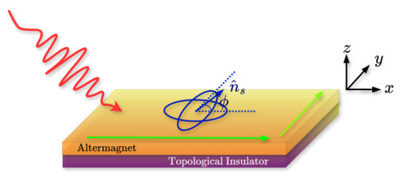
<figcaption class="paper-figure-caption"><b>Fig 1.</b> FIG. 1. Schematic illustration of an AM-2D TI heterostruc- ture and optically induced spin transport. The bilayer form consists of an AM layer on top of a 2D TI (bottom layer). When system is illuminated by an incident light wave (red wavy arrow), nonlinear spin shift currents are generated, which are indicated by the green arrow. The allowed spin- current components are determined by the orientation of the Néel vector, ˆns (blue arrow), parametrized by the angle ϕ.</figcaption>
</figure>
<figure class="paper-figure-card">
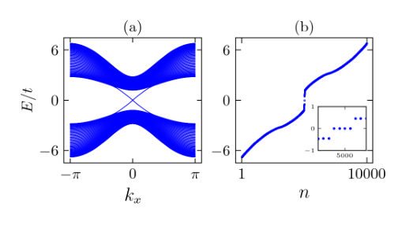
<figcaption class="paper-figure-caption"><b>Fig 2.</b> FIG. 2. Energy spectra of the system corresponding to the two topological phases. (a) First-order topological phase (Ja = 0) with gapless helical edge mode traverses the bulk gap computed under open boundary conditions taken along the y- direction. (b) Second-order topological phase with Ja = 0.8t, considering open boundary conditions along both directions. Here, the edge modes are gapped by the AM, leaving four zero-energy corner states. Parameters are fixed at B = −1.2t, A = 2t, t = 1.</figcaption>
</figure>
<figure class="paper-figure-card">
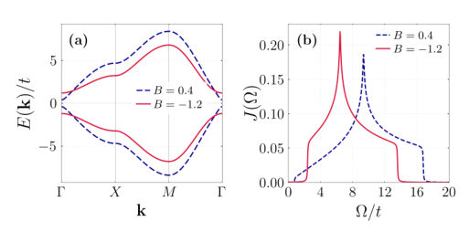
<figcaption class="paper-figure-caption"><b>Fig 3.</b> FIG. 3. Bulk band structure and joint density of states (JDOS) across two different topological phases. (a) Normal- ized bulk energy dispersion, E(k)/t, plotted along the high- symmetry path Γ(0, 0)−X(π, 0)−M(π, π)−Γ(0, 0) of the square- lattice Brillouin zone. This dispersion is compared between the topological phase (B = −1.2t, red solid line) and the trivial (B = 0.4t, blue dashed line). In both regions, the minimum band gap is at the Γ point. (b) The correspond- ing JDOS spectrum, J(Ω), is mapped against the normalized photon energy Ω/t. The prominent divergent peaks observed in the spectra indicate the logarithmic Van Hove singularities from the saddle points at the symmetry-equivalent...</figcaption>
</figure>
<figure class="paper-figure-card">
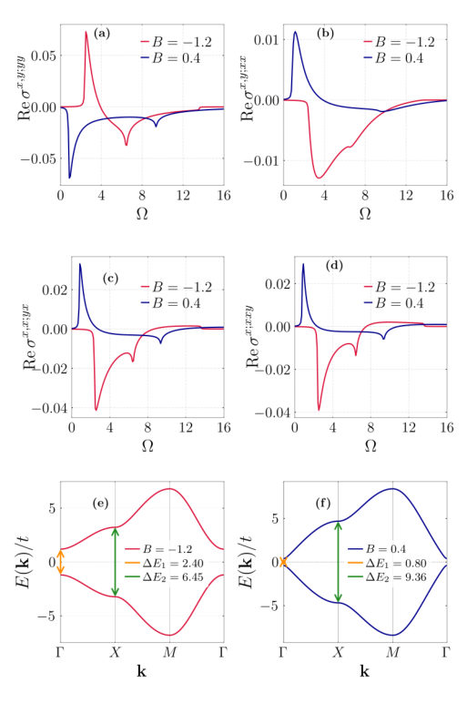
<figcaption class="paper-figure-caption"><b>Fig 4.</b> FIG. 4. Nonlinear pure spin shift conductivity across the mass parameter B = 0: (a) Re σx,y;yy, (b) Re σx,y;xx, (c) Re σx,x;yx, and (d) Re σx,x;xy are plotted as a function of the driving frequency Ωduring the topological phase tran- sition near the Γ point, and (e) &amp; (f) are the normal- ized energy band structure along the high-symmetry path Γ(0, 0)−X(π, 0)−M(π, π)−Γ(0, 0) of the Brillouin zone cor- responding to the second-order topological (red color) and trivial phases (blue color), respectively. The energy differ- ence between conduction and valence at the minima (Γ) and the saddle points X or Y in both phases gives the lowest- and highest-frequency peaks, respectively. The...</figcaption>
</figure>
<figure class="paper-figure-card">
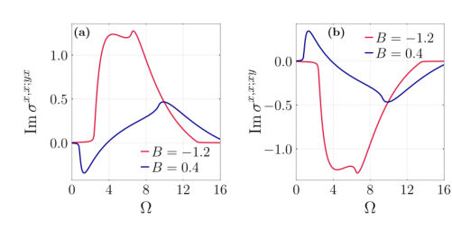
<figcaption class="paper-figure-caption"><b>Fig 5.</b> FIG. 5. Behavior of nonlinear pure spin injection conductiv- ity across the topological transition around B = 0 has been shown. Imaginary parts of the injection conductivity ten- sors (a) Im σx,x;yx and (b) Im σx,x;xy are plotted as a func- tion of frequency. The results are compared for topological (B = −1.2t, red color) and trivial (B = 0.4t, blue color) phases. The response is purely imaginary, and the lowest frequency peak undergoes a distinct sign change across the topological phase transition at the Γ point. All other system parameters are fixed as in Fig. 2.</figcaption>
</figure>
</div>

<p><strong>Summary.</strong> This paper theoretically investigates the pure spin photovoltaic effect in an altermagnetic topological insulator heterostructure. By developing a non-Abelian theory, the authors show that specific magnetic symmetries can suppress charge currents entirely, leading to a purely spin-generating response. This establishes the material as a versatile platform for controlling nonlinear spin transport using light.</p>
<p><strong>Why it may be interesting.</strong> The work provides a detailed theoretical framework linking magnetic order parameters (Néel vector) to specific quantized electronic responses (pure spin photocurrents) in topological materials, which is highly relevant for spintronics and quantum optics applications.</p>
<details>
<summary>Detailed structure</summary>
<p><strong>Main problem.</strong> The study investigates the Pure Spin Bulk Photovoltaic Effect (BPVE) in a complex magnetic heterostructure to understand spin current generation without accompanying charge currents.</p>
<p><strong>Main result.</strong> The system realizes an intrinsically pure spin photovoltaic effect when the Néel vector is in the $xy$-plane, generating dc spin currents controllable by light polarization and magnetic symmetry.</p>
<p><strong>Method.</strong> The authors develop a non-Abelian formulation of the spin BPVE, extending theory to PT-degenerate manifolds, and analyze response tensors using symmetry constraints.</p>
<p><strong>Model / system.</strong> The model is a PT-symmetric 2D heterostructure combining a topological insulator with a d-wave altermagnet. The Hamiltonian incorporates SOC and magnetic exchange fields, leading to FOTI or SOTI phases depending on the Néel vector orientation.</p>
<p><strong>Key observables.</strong> Pure spin photocurrent ($\sigma_{s,\mu;
u\lambda}$), charge photocurrent, spin shift current (driven by linear polarization), and spin injection current (driven by circular polarization).</p>
<p><strong>Important parameters / regimes.</strong> Orientation of the Néel vector ($\hat{n}_s$), local Dirac mass sign change, and symmetry protection ($C_{4z}T$ vs $C_{2z}$).</p>
<p><strong>Assumptions / limitations.</strong> The theory extends conventional BPVE to PT-degenerate manifolds using a non-Abelian formalism; approximations are made regarding the spin-current operator's applicability in nonlinear optical processes.</p>
<p><strong>Figures summary.</strong> Figure 1 schematically shows optically induced spin transport components based on Néel vector orientation. Figure 2 illustrates energy spectra showing FOTI and SOTI topological phases under open boundary conditions.</p>
<p><strong>Paper structure.</strong> The paper progresses by defining the physical system (TI/Altermagnet heterostructure), developing the generalized non-Abelian theory for spin BPVE, analyzing how symmetry dictates the pure spin response in different topological regimes (SOTI vs FOTI), and concluding with the platform's potential for controlling spin currents.</p>
</details>
<details>
<summary>Abstract</summary>
<p>We investigate the bulk photovoltaic effect (BPVE) in a $PT$-symmetric two-dimensional heterostructure consisting of a topological insulator coupled to a $d$-wave altermagnet. To describe the symmetry-enforced degenerate bands of this system, we develop a non-Abelian formulation of the spin BPVE, extending the conventional theory from isolated nondegenerate bands to $PT$-degenerate manifolds. We show that the orientation of the Néel vector controls both the topological phase and the character of the nonlinear optical response. When the Néel vector lies in the $xy$-plane, the heterostructure realizes a second-order topological insulator (SOTI) protected by $C_{4z}T$ symmetry. The system also retains $C_{2z}$ symmetry, which completely suppresses second-order charge photocurrents while allowing finite spin photocurrents. As a result, the BPVE becomes an intrinsically pure spin photovoltaic effect, generating a dc spin current without an accompanying charge current. We find that linearly polarized light drives a spin shift current, whereas circularly polarized light generates a spin injection current. Both responses undergo a sign reversal whenever the local Dirac mass changes sign. As the Néel vector is rotated toward the $z$-axis, the SOTI phase transforms into a first-order topological insulating phase, leading to the coexistence of charge and spin photocurrents. Our results establish $PT$-symmetric altermagnetic topological-insulator heterostructures as a versatile platform for generating and controlling pure spin photocurrents and reveal nonlinear spin transport as a sensitive probe of topology and magnetic symmetry.</p>
</details>
<p><sub><a href="#top">↑ back to top</a></sub></p>

<p><a id="paper-2607.18865"></a></p>
<h3 id="enhanced-nqs-via-annealed-gradient-descent"><a href="http://arxiv.org/abs/2607.18865v1">Enhanced NQS via Annealed Gradient Descent</a></h3>
<p><strong>Authors:</strong> Shiwei Zhou, Yiming Huang, Xiao Yuan, Xiaoxia Cai<br>
<strong>Type:</strong> theory · <strong>Category:</strong> numerical methods · <strong>PDF:</strong> <a href="https://arxiv.org/pdf/2607.18865v1">https://arxiv.org/pdf/2607.18865v1</a><br>
<strong>Analysis basis:</strong> full PDF text, analyzed in chunks
<strong>Topic relevance:</strong> <code>analog quantum simulation</code> <strong>3/5</strong> · <code>methods for driven-dissipative</code> <strong>3/5</strong> · <code>exotic spin models in light-matter</code> <strong>1/5</strong> · <code>non-equilibrium dynamics</code> <strong>1/5</strong></p>
<div class="figure-strip-hint">↔ Scroll figures horizontally</div>
<div class="paper-figures-scroll">
<figure class="paper-figure-card">
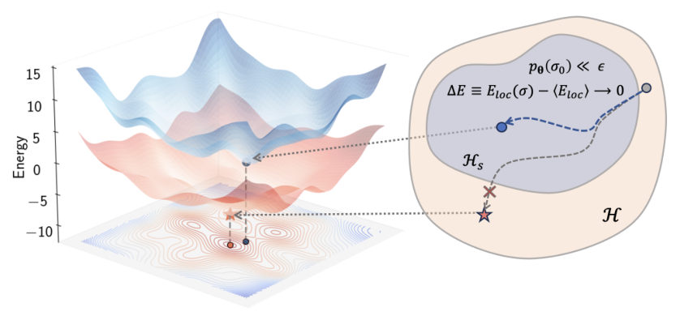
<figcaption class="paper-figure-caption"><b>Fig 1.</b> FIG. 1. The illustration of subspace trapping in NQS optimization. (Left) Loss landscape in the variational parameter space. (Right) The red and blue regions denote the full Hilbert space H and a restricted subspace HS, respectively. The optimization prematurely converges within HS (blue curve) when the network underestimates the probability of a critical configuration, pθ(σ0) ≪ϵ, where ϵ = 1/∆tNs. Sampling is then restricted to HS, so the apparent convergence criterion ∆E →0 is satisfied even though the energy remains above the true ground-state energy.</figcaption>
</figure>
<figure class="paper-figure-card">
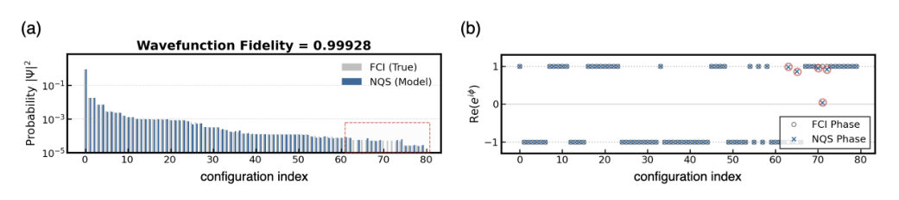
<figcaption class="paper-figure-caption"><b>Fig 2.</b> FIG. 2. Subspace trapping in NQS optimization. Comparison between the exact ground state (Full Configuration Interaction, FCI) and the optimized NQS state in the computational basis, where configurations are sorted by the magnitude of the amplitudes. (a) Probability distribution |ψ|2 of the ground state and the NQS state. The red dashed box highlights the low-weight but non-negligible configurations. (b) Phase comparison between the FCI and NQS states. The red circles mark unsampled or suppressed configurations for which the phase of NQS deviates from the phase of ground state.</figcaption>
</figure>
<figure class="paper-figure-card">
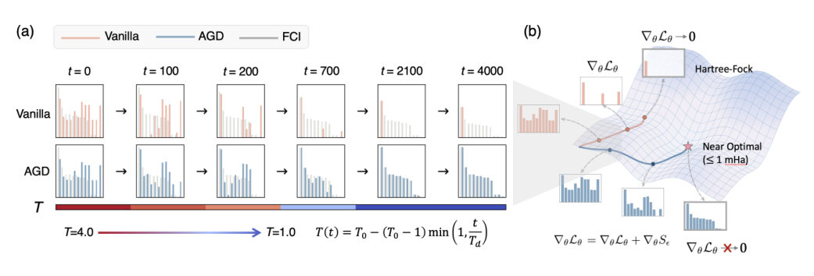
<figcaption class="paper-figure-caption"><b>Fig 3.</b> FIG. 3. The illustration of an AGD-enhanced NQS for a molecular Hamiltonian as an example, showing that vanilla gradient descent (GD) is prone to be trapped in Hartree-Fock local minima, whereas AGD-enhanced approach enables more effective exploration of the energy landscape. The two colored curves depict the optimization trajectories, the yellow curve corresponds to the NQS optimized with GD, while the blue curve represents the NQS optimized using AGD. The histograms along each trajectory show the corresponding sampled distributions during optimization. Along the GD (red) path, it indicates that GD hard to handle the explore-exploit tradeoff and trends to collapse toward Hartree-Fock like...</figcaption>
</figure>
<figure class="paper-figure-card">
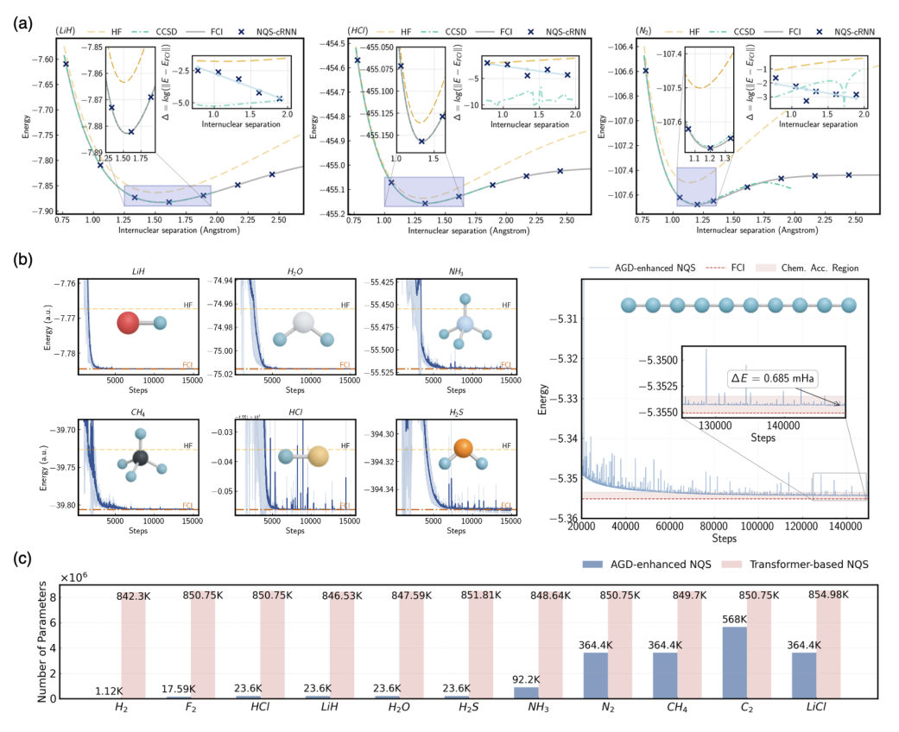
<figcaption class="paper-figure-caption"><b>Fig 4.</b> FIG. 4. Performance of AGD-enhanced NQS on molecular systems. (a) Potential energy surfaces for LiH, HCl, and N2 as a function of internuclear separation. The AGD-enhanced cRNN-NQS results are compared with Hartree-Fock (HF), coupled- cluster singles and doubles (CCSD), and full configuration interaction (FCI) references. The zoomed insets highlight the equilibrium region, while the error insets show ∆= log(|E −EFCI|), demonstrating that the AGD-enhanced NQS closely follows the FCI energy across different molecular geometries. (b) Training dynamics of AGD-enhanced NQS for molecular ground-state search. The left panels show the average convergence curves for LiH, H2O, NH3, CH4, HCl and H2S,...</figcaption>
</figure>
<figure class="paper-figure-card">
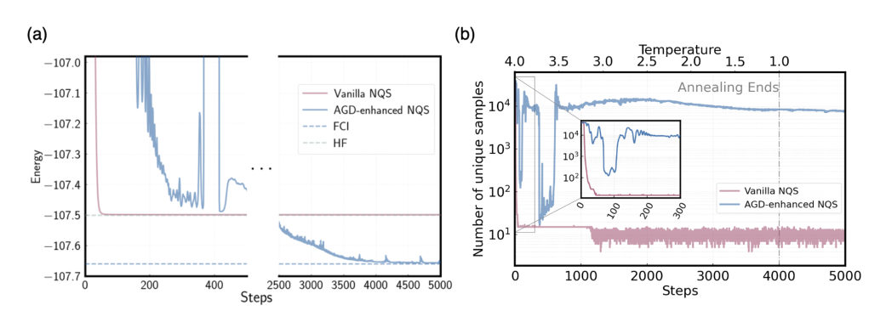
<figcaption class="paper-figure-caption"><b>Fig 5.</b> FIG. 5. Annealing from a higher initial temperature enables convergence to the ground state for N2. (a) Optimization curve of vanilla NQS and AGD-enhanced NQS. (b) Number of unique sampled configurations during optimization for vanilla NQS and AGD-enhanced NQS, together with the annealing temperature schedule shown on the upper axis.</figcaption>
</figure>
</div>

<p><strong>Summary.</strong> This paper addresses the critical issue of 'subspace trapping' in optimizing Neural Quantum States (NQS) for many-body physics. The authors introduce Annealed Gradient Descent (AGD), a novel, sampling-aware optimization technique. AGD stabilizes training by artificially boosting the gradient contribution from rarely sampled, but physically important, configurations.</p>
<p><strong>Why it may be interesting.</strong> It provides a crucial algorithmic fix for modern quantum simulation techniques, ensuring that the computational power of expressive neural networks is not undermined by statistical limitations inherent in Monte Carlo sampling.</p>
<details>
<summary>Detailed structure</summary>
<p><strong>Main problem.</strong> Neural Quantum States (NQS) optimization suffers from 'subspace trapping' due to finite-sample instability, where important low-probability configurations are rarely sampled and receive insufficient gradient feedback.</p>
<p><strong>Main result.</strong> The proposed Annealed Gradient Descent (AGD) method successfully suppresses metastable trapping, allowing simple NQS architectures to achieve chemical accuracy across molecular and spin model benchmarks.</p>
<p><strong>Method.</strong> AGD is a sampling-aware update rule that temporarily reweights the influence of low-probability configurations during optimization, guiding the search away from restricted subspaces.</p>
<p><strong>Model / system.</strong> The work applies to general quantum many-body systems, including molecular electronic structure calculations (using Gaussian basis sets) and quantum spin models like the 1D and 2D J1-J2 Heisenberg model.</p>
<p><strong>Key observables.</strong> Variational energy expectation value ($\langle \hat{H} 
angle$), local energy ($E_{	ext{loc}}(\sigma)$), and convergence diagnostics showing trapping above the true ground state energy.</p>
<p><strong>Important parameters / regimes.</strong> The annealing factor, learning rates (e.g., $\eta$, decay schedules), and system-specific coupling constants ($J_1/J_2$).</p>
<p><strong>Assumptions / limitations.</strong> Standard gradient estimation methods fail when sampling coverage is insufficient; the authors derive enhanced gradient forms using logarithmic weight functions to correct for this bias.</p>
<p><strong>Figures summary.</strong> Figures illustrate subspace trapping convergence (GD vs. AGD), showing AGD forces exploration toward lower energy states, and compare different weighting schemes ($w(p)=p$ vs $w(p)=-p \log p$).</p>
<p><strong>Paper structure.</strong> The paper first identifies the theoretical failure mode (subspace trapping) in VMC/NQS optimization. It then develops AGD as a sampling-aware update rule, deriving enhanced gradient estimators that incorporate low-probability information before benchmarking on molecular and spin systems.</p>
</details>
<details>
<summary>Abstract</summary>
<p>Neural quantum states offer expressive representations of quantum many-body wave functions, yet their practical accuracy can be limited by stochastic optimization rather than representational capacity. Here we identify a finite-sample instability, termed subspace trapping, in which physically important configurations become strongly underestimated, remain absent from successive sampling batches and receive insufficient gradient feedback. This self-reinforcing loss of sampled support can confine optimization to an effective subspace and produce apparently stationary states above the true ground state energy. To address this problem, we introduce annealed gradient descent (AGD), a sampling-aware update with annealing factor that temporarily increases the relative contribution of sampled low-probability configurations while limiting the dominance of high-probability ones. We establish the connection between finite-sample support loss and effective subspace optimization, and then evaluate the method across molecular systems, one and two-dimensional $J_1$-$J_2$ models. Annealed gradient descent suppresses metastable trapping, preserves physically relevant configurations and enables compact neural quantum states to attain chemical accuracy and competitive state-of-the-art performance. These results establish AGD as a lightweight complement to expressive neural architectures, improved sampling strategies for scalable quantum many-body optimization.</p>
</details>
<p><sub><a href="#top">↑ back to top</a></sub></p>

<p><a id="paper-2607.19136"></a></p>
<h3 id="quantum-limits-to-chiroptical-molecular-discrimination"><a href="http://arxiv.org/abs/2607.19136v1">Quantum limits to chiroptical molecular discrimination</a></h3>
<p><strong>Authors:</strong> Mikael P. Backlund<br>
<strong>Type:</strong> theory · <strong>Category:</strong> other · <strong>PDF:</strong> <a href="https://arxiv.org/pdf/2607.19136v1">https://arxiv.org/pdf/2607.19136v1</a><br>
<strong>Analysis basis:</strong> full PDF text, analyzed in chunks
<strong>Topic relevance:</strong> <code>quantum measurements</code> <strong>3/5</strong> · <code>entanglement &amp; information structure</code> <strong>2/5</strong> · <code>correlated / nonlocal dissipation</code> <strong>1/5</strong> · <code>interference shaping light</code> <strong>1/5</strong> · <code>measurement-induced transitions</code> <strong>1/5</strong></p>
<div class="figure-strip-hint">↔ Scroll figures horizontally</div>
<div class="paper-figures-scroll">
<figure class="paper-figure-card">
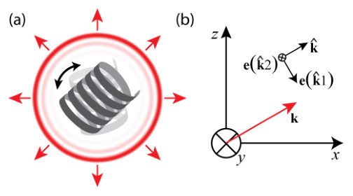
<figcaption class="paper-figure-caption"><b>Fig 1.</b> FIG. 1. (a) Illustration of the model. We consider the spherically symmetric field due to a randomly oriented chi- ral quantum emitter, here depicted as a tumbling helix. (b) Lab-frame coordinate definitions, with wavevector k.</figcaption>
</figure>
<figure class="paper-figure-card">
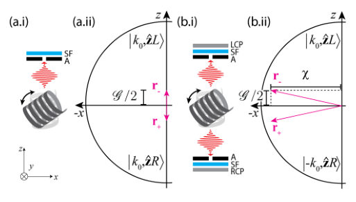
<figcaption class="paper-figure-caption"><b>Fig 2.</b> FIG. 3. Filtered collection from one (a.i) or two (b.i) direc- tions. A: aperture, SF: spectral filter, LCP/RCP: left/right- circular polarizer. (a.ii) and (b.ii) sketch the Bloch vectors r± for the qubit states described in the main text, assuming χ, G &gt; 0.</figcaption>
</figure>
<figure class="paper-figure-card">
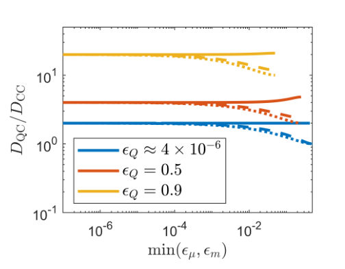
<figcaption class="paper-figure-caption"><b>Fig 3.</b> FIG. 2. Calculated ratio of quantum to classical Chernoff in- formation for various ϵµ, ϵm, ϵQ, and θµm. Solid lines: θµm = 0◦, dashed lines: θµm = 45◦, dotted lines: θµm ≈93.8◦. The values θµm ≈93.8◦and ϵQ ≈4 × 10−6 are based on calcula- tions for a small helicene reported in Ref. [24].</figcaption>
</figure>
<figure class="paper-figure-card">

<figcaption class="paper-figure-caption"><b>Fig 4.</b> FIG. 4. Calculated Bayes’ (open circles) and Helstrom (filled circles) error rates for two values of |G | on the high end of those reported experimentally for lanthanide-based chiropti- cal emitters. Solid (dashed) lines indicate the scaling of the classical (quantum) Chernoff bounds, with offsets arbitrary.</figcaption>
</figure>
<figure class="paper-figure-card">
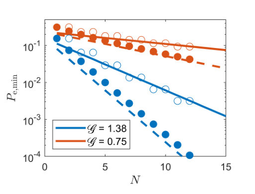
<figcaption class="paper-figure-caption"><b>Fig 5.</b> Figure 4 displays numerically computed Helstrom and Bayes error rates associated with discriminating [¯ρ(ˆzL,ˆzR) + ]⊗N from [¯ρ(ˆzL,ˆzR) − ]⊗N for various N ≤12. We show data for two values of dissymmetry factors on the high end of what has been reported experimentally for lanthanide complexes exhibiting CPL [65, 66]. We’ve as- sumed ϵm &gt; ϵµ ≫ϵ0 Q and that the electric and mag- netic dipole moments are approximately parallel. Agree- ment with the classical (solid lines) and quantum (dashed lines) Chernoff bounds indicates rapid convergence to the asymptotic limit. For G = 1.38, the error rate of the opti- mal classical measurement is over an order of magnitude worse than that of the...</figcaption>
</figure>
</div>

<p><strong>Summary.</strong> This paper develops a rigorous theoretical framework to determine the best possible error rate for distinguishing between enantiomer pairs using quantum light emitted from chiral molecules. By comparing optimal quantum measurement strategies against classical ones, the authors demonstrate that collecting photons collectively provides significant, potentially orders-of-magnitude, improvements in discrimination accuracy. This has implications for developing highly sensitive chiroptical sensors.</p>
<p><strong>Why it may be interesting.</strong> This work directly addresses quantum metrology applied to molecular properties (chirality), providing quantitative benchmarks for how entanglement or collective measurements can surpass classical limits in sensing fundamental physical symmetries.</p>
<details>
<summary>Detailed structure</summary>
<p><strong>Main problem.</strong> To quantitatively establish error bounds for classifying the handedness (chirality) of a quantum optical emitter by discriminating between enantiomer pairs.</p>
<p><strong>Main result.</strong> Optimal collective measurements on $N$ photons can provide an orders-of-magnitude improvement in the achievable error rate compared to separable measurement strategies.</p>
<p><strong>Method.</strong> The problem is framed as a quantum symmetric binary hypothesis test, comparing error bounds derived from Helstrom and Chernoff information for different measurement schemes.</p>
<p><strong>Model / system.</strong> The system involves chiroptical emission, modeled using density matrices ($ar{
ho}_\pm$) describing the emitted photon state, which depends on dipole moments and polarization contributions.</p>
<p><strong>Key observables.</strong> Dissymmetry factor ($G$), minimum error probability ($P_e^{\min}$), Quantum Chernoff Information ($D_{QC}$), and Classical Chernoff Information ($D_{CC}$).</p>
<p><strong>Important parameters / regimes.</strong> The number of photons ($N$), the dissymmetry factor ($G^2$), and system parameters like $\epsilon_\mu, \epsilon_m, \epsilon_Q$.</p>
<p><strong>Assumptions / limitations.</strong> The analysis assumes a narrow spectral bandwidth (e.g., using an etalon) and focuses on emission/collection processes.</p>
<p><strong>Figures summary.</strong> Figures illustrate the ratio of quantum to classical Chernoff information for different collection geometries (single vs. opposite sides), demonstrating the advantage scaling with $N$.</p>
<p><strong>Paper structure.</strong> The paper develops the theoretical framework by defining the chiral state, applying hypothesis testing bounds, and comparing the asymptotic error scaling ($e^{-ND}$) for various measurement types.</p>
</details>
<details>
<summary>Abstract</summary>
<p>Discriminating enantiomer pairs is of central importance in the molecular sciences. The preferential interaction between chiral light and matter is commonly employed in this discrimination, despite fundamental challenges. Here we present quantitative error bounds for classifying the handedness of a chiral, randomly oriented, quantum optical emitter from the perspective of classical and quantum hypothesis testing. Most interestingly, we find that a collective measurement on $N$ photons can provide an orders-of-magnitude improvement in error rate relative to a corresponding separable measurement.</p>
</details>
<p><sub><a href="#top">↑ back to top</a></sub></p>

<p><a id="paper-2607.18383"></a></p>
<h3 id="adlams-frame-comment-on-wigners-frame"><a href="http://arxiv.org/abs/2607.18383v1">Adlam's Frame: comment on "Wigner's Frame"</a></h3>
<p><strong>Authors:</strong> Andrea Di Biagio, Anne-Catherine de la Hamette<br>
<strong>Type:</strong> theory · <strong>Category:</strong> other · <strong>PDF:</strong> <a href="https://arxiv.org/pdf/2607.18383v1">https://arxiv.org/pdf/2607.18383v1</a><br>
<strong>Analysis basis:</strong> full PDF text, analyzed in chunks
<strong>Topic relevance:</strong> <code>quantum measurements</code> <strong>3/5</strong> · <code>entanglement &amp; information structure</code> <strong>2/5</strong> · <code>Keldysh / 2PI / non-Gaussian methods</code> <strong>1/5</strong> · <code>measurement-induced transitions</code> <strong>1/5</strong></p>
<div class="figure-strip-hint">↔ Scroll figures horizontally</div>
<div class="paper-figures-scroll">
<figure class="paper-figure-card">
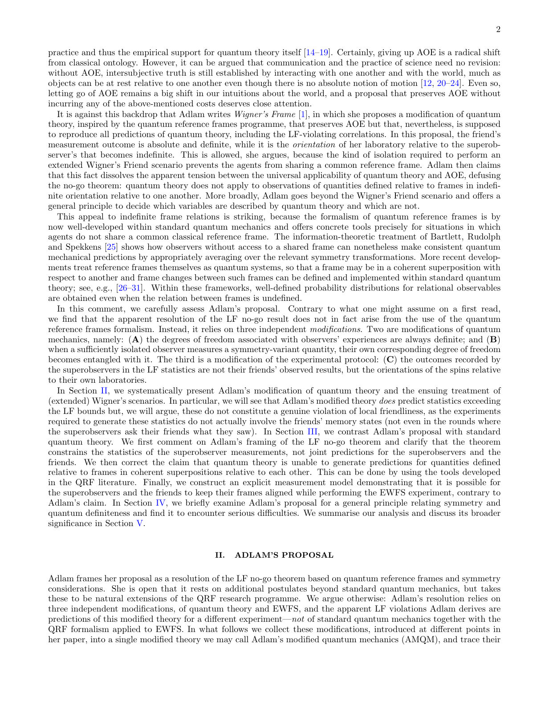
<figcaption class="paper-figure-caption"><b>Fig 1.</b> Low-resolution page preview, page 2</figcaption>
</figure>
<figure class="paper-figure-card">
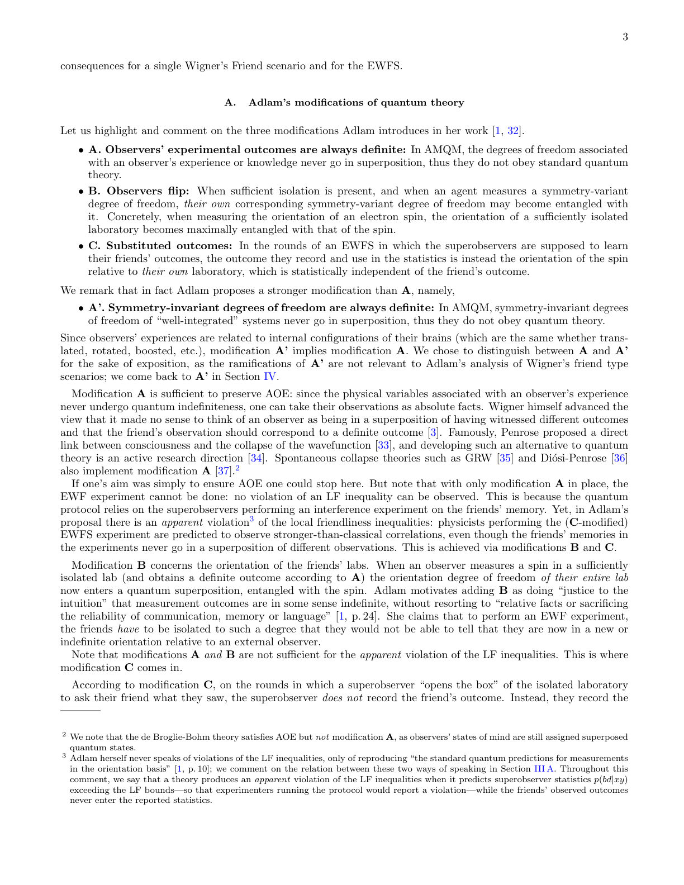
<figcaption class="paper-figure-caption"><b>Fig 2.</b> Low-resolution page preview, page 3</figcaption>
</figure>
<figure class="paper-figure-card">
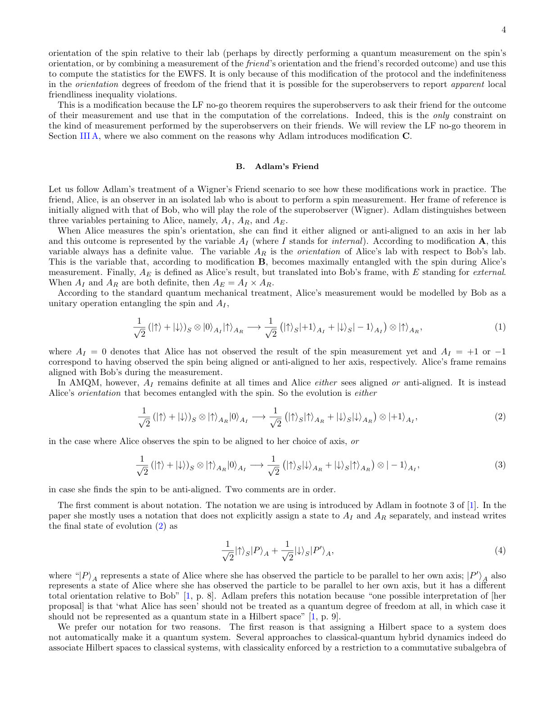
<figcaption class="paper-figure-caption"><b>Fig 3.</b> Low-resolution page preview, page 4</figcaption>
</figure>
<figure class="paper-figure-card">
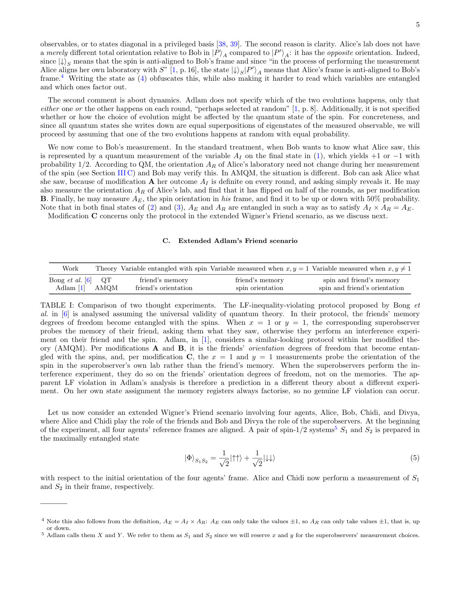
<figcaption class="paper-figure-caption"><b>Fig 4.</b> Low-resolution page preview, page 5</figcaption>
</figure>
<figure class="paper-figure-card">
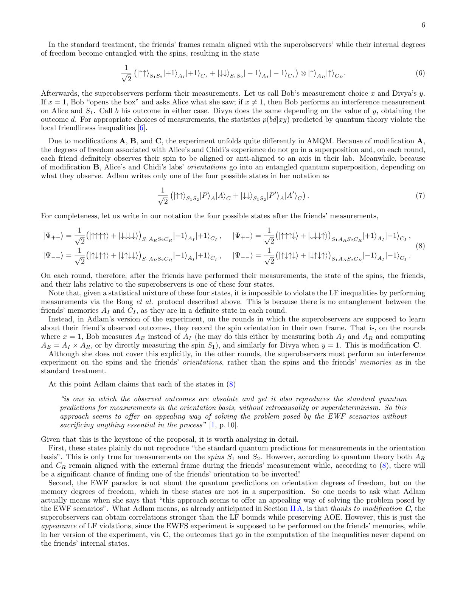
<figcaption class="paper-figure-caption"><b>Fig 5.</b> Low-resolution page preview, page 6</figcaption>
</figure>
</div>

<p><strong>Summary.</strong> This paper provides a critical analysis of Adlam's attempt to reconcile quantum theory with 'local friendliness' theorems using Quantum Reference Frames. The authors demonstrate that Adlam's resolution requires three non-standard modifications to physics, suggesting QRF formalism alone is insufficient. Ultimately, the work concludes that standard quantum mechanics cannot evade these fundamental no-go theorems.</p>
<p><strong>Why it may be interesting.</strong> This work is highly relevant for theoretical physicists working on quantum foundations, open quantum systems, or relativistic quantum information, as it tackles foundational issues regarding measurement contextuality and observer dependence in a rigorous mathematical framework.</p>
<details>
<summary>Detailed structure</summary>
<p><strong>Main problem.</strong> The paper critically assesses Adlam's proposal attempting to resolve tensions between quantum theory and 'local friendliness' (LF) theorems arising from Extended Wigner's Friend Scenarios (EWFS). It aims to show that standard Quantum Reference Frame (QRF) formalism cannot evade these no-go theorems.</p>
<p><strong>Main result.</strong> The apparent resolution offered by Adlam relies on three independent modifications—definite observer degrees of freedom, spin-orientation entanglement with the lab frame, and altered superobserver recording protocols—rather than solely QRF principles. Within standard quantum theory, QRFs do not evade EWFS no-go theorems.</p>
<p><strong>Method.</strong> The authors employ critical assessment, comparing Adlam's modified mechanics (AMQM) against standard QM predictions using formalisms involving relational observables and group averaging techniques derived from QRF theory.</p>
<p><strong>Model / system.</strong> The core model is the Wigner's Friend scenario (EWFS) involving entangled bipartite quantum systems (spin-1/2 particles), analyzed through the lens of Quantum Reference Frames (QRFs). The analysis uses abstract mathematical tools like group representations and projection operators to define frame-independent observables.</p>
<p><strong>Key observables.</strong> Local Friendliness (LF) inequalities, spin outcomes ($AI$, $AE$), lab orientations ($AR$), and relational observables defined via reduction/relativisation maps.</p>
<p><strong>Important parameters / regimes.</strong> The structure depends on the underlying symmetry group G used for frame transformations; specific calculations involve time evolution parameters like $\pi/(2g)$.</p>
<p><strong>Assumptions / limitations.</strong> The critique assumes standard quantum theory holds, and it highlights that Adlam's proposal rests on misconceptions regarding QRFs and EWFS protocols.</p>
<p><strong>Figures summary.</strong> Not specified in the notes; however, the structure implies comparisons between expectation values calculated under different theoretical frameworks (QM vs AMQM) for Bell-type tests.</p>
<p><strong>Paper structure.</strong> The paper systematically critiques Adlam's proposal by first defining the tension (LF theorems), then detailing Adlam's three modifications, and finally using advanced QRF formalism (including appendices on recoupling theory and relational observables) to demonstrate that these modifications are necessary but insufficient to resolve the fundamental conflict within standard QM.</p>
</details>
<details>
<summary>Abstract</summary>
<p>Recent no-go theorems based on extended Wigner's Friend scenarios (EWFS) reveal a deep tension between the universal validity of quantum theory and local friendliness (LF), the conjunction of three natural assumptions: the absoluteness of observed events, locality, and no-superdeterminism. In a recent work, Adlam argues that this tension can be dissolved by appealing to quantum reference frames (QRFs). We present and critically assess her proposal. We show that her proposed resolution does not arise from QRFs, but instead relies on three independent modifications: certain degrees of freedom are always definite, observers can flip upon measuring spins, and the outcomes the superobservers record and use to test the inequalities are not their friends' observed results. The proposal and the arguments for the plausibility of these modifications rest on several misconceptions about QRFs and EWFS, which we rectify. We conclude that, within standard quantum theory, quantum reference frames do not evade the EWFS no-go theorems.</p>
</details>
<p><sub><a href="#top">↑ back to top</a></sub></p>

<p><a id="paper-2607.18854"></a></p>
<h3 id="quantum-dynamics-of-math606math-in-orthogonal-two-color-fields"><a href="http://arxiv.org/abs/2607.18854v1">Quantum Dynamics of $H_2^+$ in Orthogonal Two-Color Fields</a></h3>
<p><strong>Authors:</strong> Jinzhen Zhu<br>
<strong>Type:</strong> theory · <strong>Category:</strong> other · <strong>PDF:</strong> <a href="https://arxiv.org/pdf/2607.18854v1">https://arxiv.org/pdf/2607.18854v1</a><br>
<strong>Analysis basis:</strong> full PDF text, analyzed in chunks
<strong>Topic relevance:</strong> <code>non-equilibrium dynamics</code> <strong>3/5</strong> · <code>Keldysh / 2PI / non-Gaussian methods</code> <strong>1/5</strong> · <code>driven-dissipative phase transition</code> <strong>1/5</strong> · <code>methods for driven-dissipative</code> <strong>1/5</strong> · <code>non-equilibrium universality</code> <strong>1/5</strong></p>
<div class="figure-strip-hint">↔ Scroll figures horizontally</div>
<div class="paper-figures-scroll">
<figure class="paper-figure-card">
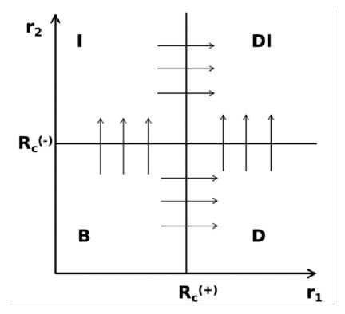
<figcaption class="paper-figure-caption"><b>Fig 1.</b> FIG. 1. Partition of configuration space used for the tSurff propagation of dissociative ionization. B denotes the bound region. In D, the nuclei have crossed R(+) c while the electron remains inside R(−) c ; in I, the electron has crossed R(−) c while the nuclei remain inside R(+) c . In the DI region, both the nuclei and the electron have crossed their respective tSurff surfaces. Here, R(+) c and R(−) c are the tSurff radii associated with r1 = |⃗r1| and r2 = |⃗r2|, respectively.</figcaption>
</figure>
<figure class="paper-figure-card">
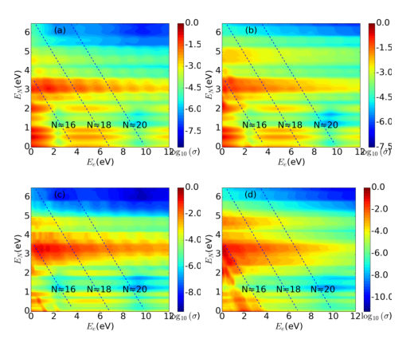
<figcaption class="paper-figure-caption"><b>Fig 2.</b> FIG. 2. JES of H+ 2 dissociative ionization driven by 800-nm, cos8 pulses with a peak intensity of 8 × 1013 W/cm2: (a) lin- early polarized, FWHM 2 optical cycles; (b) circularly polar- ized, FWHM 2 optical cycles; (c) linearly polarized, FWHM 6 optical cycles; and (d) circularly polarized, FWHM 6 optical cycles. The dashed lines show the energy-sharing condition of Eq. 21 for absorption of N photons.</figcaption>
</figure>
<figure class="paper-figure-card">
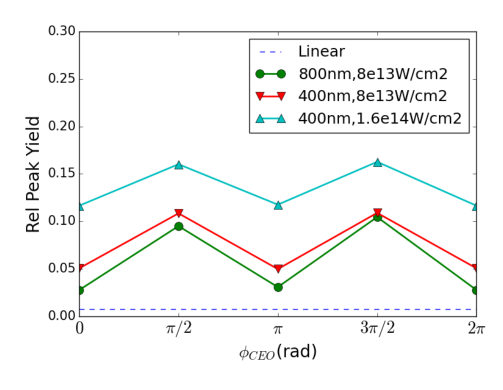
<figcaption class="paper-figure-caption"><b>Fig 3.</b> FIG. 3. Relative height of the secondary proton KER peak at 4−5 eV with respect to the main peak at 2−4 eV, plotted as a function of the relative phase of the perpendicular field. The z-polarized pulse is fixed at 800 nm, 8 × 1013 W/cm2, with a cos8 envelope of FWHM 2 optical cycles. The dashed line is the single-color, linearly polarized reference. The control-field parameters are 800 nm and 8 × 1013 W/cm2 (green), 400 nm and 8×1013 W/cm2 (red), and 400 nm and 1.6×1014 W/cm2</figcaption>
</figure>
<figure class="paper-figure-card">
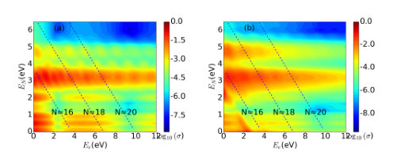
<figcaption class="paper-figure-caption"><b>Fig 4.</b> FIG. 4. JES of H+ 2 dissociative ionization driven by an 800-nm flat-top pulse with FWHM 6 optical cycles and peak inten- sity 8 × 1013 W/cm2: (a) linear polarization and (b) circular polarization. The dashed lines show the energy-sharing con- dition of Eq. 21.</figcaption>
</figure>
<figure class="paper-figure-card">
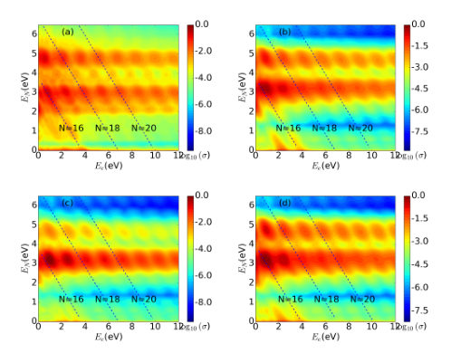
<figcaption class="paper-figure-caption"><b>Fig 5.</b> FIG. 6. JES obtained from calculations initiated in individual excited eigenstates: (a) E1, (b) E2, (c) E3, and (d) E4. A linearly polarized 800-nm flat-top pulse is applied along the z axis, with peak intensity 8×1013 W/cm2 and FWHM 6 optical cycles. The dashed lines show the energy-sharing condition of Eq. 21.</figcaption>
</figure>
</div>

<p><strong>Summary.</strong> The paper simulates the dissociation of H2+ driven by strong orthogonal laser fields to understand ultrafast quantum dynamics. Key findings include the emergence of an additional high-energy proton peak, which is controllable via the relative phase between the field components. This demonstrates that the spatial geometry of multi-dimensional laser fields offers a powerful new degree of freedom for controlling molecular fragmentation.</p>
<p><strong>Why it may be interesting.</strong> This work directly addresses non-equilibrium dynamics in molecular physics using intense laser fields, providing detailed insights into how field geometry (spatial/temporal) acts as a control knob for electron-nuclear energy partitioning and fragmentation pathways.</p>
<details>
<summary>Detailed structure</summary>
<p><strong>Main problem.</strong> The study investigates the quantum dynamics of H2+ dissociative ionization when driven by strong, orthogonal laser fields.</p>
<p><strong>Main result.</strong> Orthogonal fields introduce a high-energy proton kinetic-energy-release (KER) peak ($\approx 4-5$ eV) absent in single-color calculations, and allow coherent control over this yield via the relative carrier-envelope phase.</p>
<p><strong>Method.</strong> The research employs full-dimensional quantum simulations using time-dependent methods to calculate Joint Energy Spectra (JES) for dissociative ionization.</p>
<p><strong>Model / system.</strong> The system is the hydrogen molecular ion (H2+), modeled with a Hamiltonian including electronic, nuclear, and electron-proton interaction terms. The dynamics are driven by intense laser fields composed of orthogonal components ($\vec{E}(t) = E_z(t)\hat{z} + E_x(t)\hat{x}$).</p>
<p><strong>Key observables.</strong> Proton Kinetic-Energy-Release (KER) spectrum, electron–proton energy-sharing pattern, and fragment angular distributions.</p>
<p><strong>Important parameters / regimes.</strong> Laser field geometry (orthogonal components), relative carrier-envelope phase ($\phi$), and pulse duration/frequency (e.g., 800-nm, cos^8 pulses).</p>
<p><strong>Assumptions / limitations.</strong> The simulation uses the tSurff method, which assumes neglect of particle interactions beyond large radii; full-dimensional simulations are computationally demanding.</p>
<p><strong>Figures summary.</strong> Figures compare JES under linear vs. circular polarization, show the dependence of a secondary KER peak yield on the relative phase ($\phi$), and illustrate how angular distributions rotate with field phase for short pulses.</p>
<p><strong>Paper structure.</strong> The paper develops the theoretical framework using full-dimensional quantum simulations to model H2+ ionization. It then presents results comparing single-color vs. orthogonal fields, highlighting the secondary peak generation, and finally discusses the control mechanisms afforded by varying the relative phase of the perpendicular field component.</p>
</details>
<details>
<summary>Abstract</summary>
<p>We present full-dimensional quantum simulations of $H_2^+$ dissociative ionization driven by strong orthogonal laser fields. We consider equal-frequency orthogonal components, which generate elliptical or circular polarization depending on their relative phase and amplitude, as well as orthogonal $800$- and $400$-nm two-color fields. These two-dimensional fields strongly modify the fragmentation dynamics. Most notably, we identify a high-energy peak in the proton kinetic-energy-release (KER) spectrum at approximately $4-5$ eV that is absent from the corresponding single-color, linearly polarized calculations. The yield of this peak can be coherently controlled by varying the relative carrier-envelope phase of the perpendicular field component. The perpendicular field also disrupts the clear electron-proton energy-sharing pattern observed in the main $3-3.5$ eV dissociation channel, indicating more complex multichannel dynamics. Time-dependent state projections and calculations initiated from individual excited states attribute the additional peak to laser-induced vibrational excitation of $H_2^+$. Furthermore, the perpendicular field rotates the fragment angular distributions, causing the most probable proton and electron emission directions to deviate substantially from the principal $z$ axis. These findings demonstrate that the spatial and temporal geometry of orthogonal laser fields provides an additional degree of freedom for controlling ultrafast electron-nuclear dynamics.</p>
</details>
<p><sub><a href="#top">↑ back to top</a></sub></p>

<p><a id="paper-2607.19017"></a></p>
<h3 id="bound-entanglement-is-insufficient-for-an-exponential-quantum-learning-advantage"><a href="http://arxiv.org/abs/2607.19017v1">Bound Entanglement Is Insufficient for an Exponential Quantum Learning Advantage</a></h3>
<p><strong>Authors:</strong> Hyeongu Kang, Sangwoo Jeon, Changhun Oh<br>
<strong>Type:</strong> theory · <strong>Category:</strong> quantum information and computing · <strong>PDF:</strong> <a href="https://arxiv.org/pdf/2607.19017v1">https://arxiv.org/pdf/2607.19017v1</a><br>
<strong>Analysis basis:</strong> full PDF text, analyzed in chunks
<strong>Topic relevance:</strong> <code>entanglement &amp; information structure</code> <strong>3/5</strong> · <code>correlated / nonlocal dissipation</code> <strong>1/5</strong> · <code>methods for driven-dissipative</code> <strong>1/5</strong> · <code>quantum measurements</code> <strong>1/5</strong></p>
<div class="figure-strip-hint">↔ Scroll figures horizontally</div>
<div class="paper-figures-scroll">
<figure class="paper-figure-card">
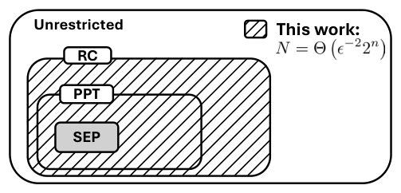
<figcaption class="paper-figure-caption"><b>Fig 1.</b> FIG. 1. Resource hierarchy for incoherent adaptive Pauli- channel learning. For 0 &lt; ϵ ≤ 1 3, the tight scaling N = Θ  ϵ−22n , previously known for SEP [27, 28], extends to the hatched one-sided reduction criterion (RC) class; the other side is unrestricted, and PPT is shown for reference.</figcaption>
</figure>
<figure class="paper-figure-card">
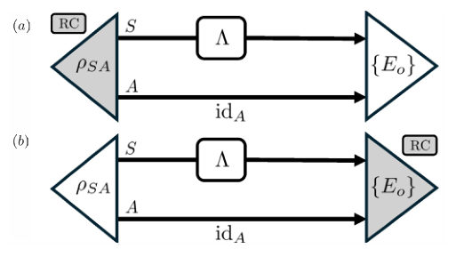
<figcaption class="paper-figure-caption"><b>Fig 2.</b> FIG. 2. Ancilla-assisted Pauli-channel learning with an in- coherent adaptive protocol. The unknown channel Λ acts on the system register S, while the ancilla A is retained noise- lessly through idA. The resulting joint state is then measured using the POVM {Eo}. We consider one-sided restrictions in which either (a) the input state ρSA or (b) each normalized POVM element satisfies the reduction criterion.</figcaption>
</figure>
<figure class="paper-figure-card">
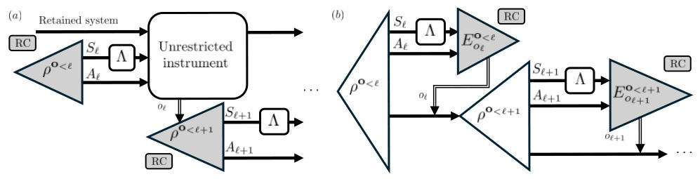
<figcaption class="paper-figure-caption"><b>Fig 3.</b> FIG. 3. Coherent adaptive protocols under one-sided reduction-criterion (RC) restrictions. (a) Input-restricted model: conditioned on the previous measurement outcomes o&lt;ℓ, the fresh input ρo&lt;ℓsatisfies RC and is uncorrelated with the retained quantum memory; after the channel use, the output and memory may undergo arbitrary joint coherent processing. (b) Measurement-restricted model: inputs may be entangled across channel uses, but the round-ℓPOVM acts only on SℓAℓ, with each normalized POVM element satisfying RC.</figcaption>
</figure>
<figure class="paper-figure-card">
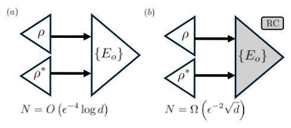
<figcaption class="paper-figure-caption"><b>Fig 4.</b> FIG. 4. Conjugate-state learning under unrestricted and RC- restricted joint measurements. (a) With unrestricted mea- surements [48], we can learn all displacement amplitudes from copies of ρ ⊗ρ∗with N = O(ϵ−4 log d). (b) For the copywise adaptive protocols considered here, the RC restriction yields the lower bound N = Ω(ϵ−2√</figcaption>
</figure>
</div>

<p><strong>Summary.</strong> This theoretical paper investigates what specific properties of entanglement are responsible for exponential speedups in quantum machine learning. By analyzing Pauli-channel and conjugate-state learning tasks, the authors prove that violating a condition called the 'reduction criterion' is necessary to maintain such an exponential advantage. This work provides a precise resource constraint characterizing quantum computational power.</p>
<p><strong>Why it may be interesting.</strong> While focused on quantum learning theory, the rigorous identification of necessary resource constraints (like RC violation) provides fundamental mathematical tools applicable to characterizing entanglement utility in complex physical processes beyond simple channel estimation.</p>
<details>
<summary>Detailed structure</summary>
<p><strong>Main problem.</strong> The paper aims to determine which specific properties of entangled quantum resources are necessary for achieving an exponential advantage in quantum learning tasks.</p>
<p><strong>Main result.</strong> Violation of the 'reduction criterion' (RC) is identified as a necessary condition for realizing an exponential sample-complexity advantage in Pauli-channel and conjugate-state learning tasks.</p>
<p><strong>Method.</strong> The authors use information-theoretic tools, including conditional min-entropy and Total Variation Distance bounds derived from hypothesis testing, to establish lower bounds on the required number of samples (sample complexity).</p>
<p><strong>Model / system.</strong> The study analyzes quantum channel estimation/learning tasks using $n$-qubit Pauli channels ($  ext{P}_n$) and conjugate-state learning involving joint measurements on $
ho \otimes 
ho^*$. The resource restriction is formalized by the reduction criterion (RC).</p>
<p><strong>Key observables.</strong> Sample complexity ($N$), Total Variation Distance ($   ext{TVD}$), conditional min-entropy, and entanglement measures.</p>
<p><strong>Important parameters / regimes.</strong> The dimension $n$ of the system, the error tolerance $\epsilon$, and a parameter $\eta$ quantifying the allowed violation of the reduction criterion.</p>
<p><strong>Assumptions / limitations.</strong> The analysis assumes that restricting input states or measurement effects to satisfy the RC is equivalent to losing the exponential advantage in the considered learning tasks.</p>
<p><strong>Figures summary.</strong> Figures illustrate resource hierarchies (SEP, PPT, RC) for Pauli-channel learning and compare sample complexity bounds between unrestricted vs. RC-restricted joint measurements in conjugate-state learning.</p>
<p><strong>Paper structure.</strong> The paper systematically analyzes three scenarios: 1) Incoherent adaptive Pauli-channel learning under RC restrictions; 2) One-sided coherent adaptive protocols under RC restrictions; and 3) Copywise adaptive conjugate-state learning, establishing the necessary role of violating RC in each case.</p>
</details>
<details>
<summary>Abstract</summary>
<p>While entanglement is known to enable exponential improvements in the sample complexity of quantum learning, it remains unclear which properties of entangled resources are responsible for such improvements. We address this question through the reduction criterion, a condition obeyed by all bound-entangled states. In $n$-qubit Pauli-channel learning, we show that restricting either the input states or the measurement effects to satisfy this criterion rules out an exponential advantage for incoherent adaptive protocols. An exponential lower bound persists for the one-sided coherent adaptive protocols considered here, even when the unrestricted side retains quantum correlations across channel uses. Using conditional min-entropy, we further quantify how the sample-complexity lower bounds weaken as larger violations of the reduction criterion are allowed. Finally, we show that the same obstruction appears in conjugate-state learning: restricted joint measurements cannot reproduce the logarithmic-sample advantage of unrestricted joint measurements on $ρ\otimesρ^*$. These results identify violation of the reduction criterion as a necessary condition for an exponential advantage in the learning tasks considered here.</p>
</details>
<p><sub><a href="#top">↑ back to top</a></sub></p>

<p><a id="paper-2607.18404"></a></p>
<h3 id="reducing-entanglement-with-a-hamiltonian-derived-clifford-transformation"><a href="http://arxiv.org/abs/2607.18404v1">Reducing entanglement with a Hamiltonian derived Clifford transformation</a></h3>
<p><strong>Authors:</strong> James Brown, Erika Lloyd, Alexandre Fleury, Tarini S Hardikar, Kenny Heitritter<br>
<strong>Type:</strong> theory · <strong>Category:</strong> quantum information and computing · <strong>PDF:</strong> <a href="https://arxiv.org/pdf/2607.18404v1">https://arxiv.org/pdf/2607.18404v1</a><br>
<strong>Analysis basis:</strong> full PDF text, analyzed in chunks
<strong>Topic relevance:</strong> <code>entanglement &amp; information structure</code> <strong>3/5</strong></p>
<div class="figure-strip-hint">↔ Scroll figures horizontally</div>
<div class="paper-figures-scroll">
<figure class="paper-figure-card">
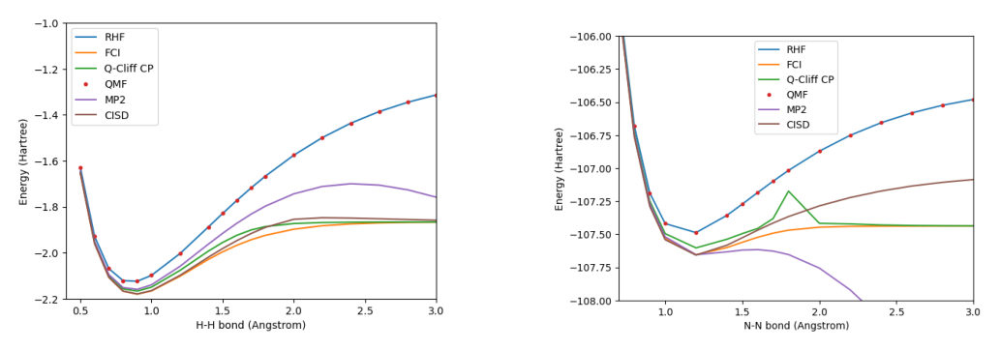
<figcaption class="paper-figure-caption"><b>Fig 1.</b> Figure 1: The importance of the Q-Cliff transformation for the H4 and N2 (with frozen core) systems in a STO-3G basis as a function of bond distance. As can be seen, the QMF wavefunction follows the RHF energy while the Q-Cliff CP wavefunction obtains energies that are better than MP2 for most of the potential energy curve. In the case of N2, MP2 is better for short bond distances but the drawbacks or shortcomings of its non-variational nature becomes apparent quickly. CISD generally performs better for these molecules at short bond distances but its dissociation is worse due to the small basis set used.</figcaption>
</figure>
<figure class="paper-figure-card">
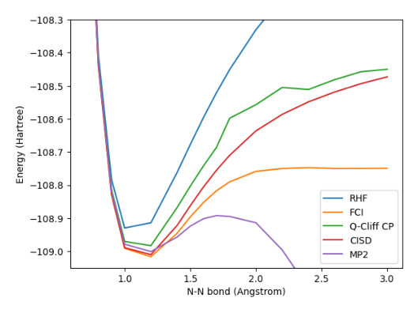
<figcaption class="paper-figure-caption"><b>Fig 2.</b> Figure 2: The CP wavefunction for a (8,8) active space for N2 in a cc-pvqz basis. The CP wave- function obtains an energy that is between MP2 and CISD accuracy.</figcaption>
</figure>
<figure class="paper-figure-card">
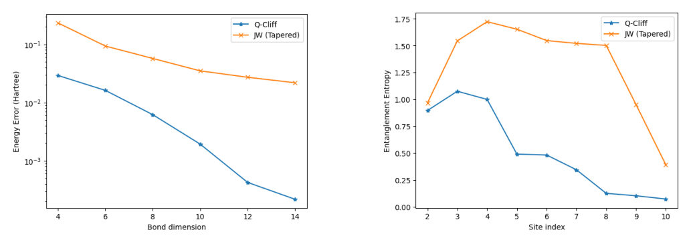
<figcaption class="paper-figure-caption"><b>Fig 3.</b> Figure 3: The increased efficiency of the DMRG calculations for the N2 molecule at 2˚A using the cc-pVQZ basis in an (8,8) active space using the Q-Cliff transformed vs the tapered JW mapping. (a) The accuracy is far better after the Q-Cliff transformation as a function of bond distance. (b) The entanglement entropy between the DMRG qubit with a bond dimension of 14 sites is much smaller using the Q-Cliff derived mapping compared to the JW and tapered mapping..</figcaption>
</figure>
<figure class="paper-figure-card">
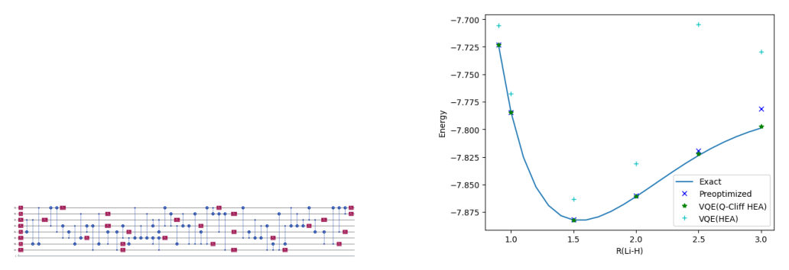
<figcaption class="paper-figure-caption"><b>Fig 4.</b> Figure 4: The circuit and potential energy curve for a 3 layer Q-Cliff derived HEA for the LiH system. It can be seen that for short bond distances, excellent energies can be achieved using the Q-Cliff HEA preoptimization method. For larger bond distances, further optimization is required using VQE but a good representation of the state is obtained. The standard hardware efficient ansatz fails to obtain good results at any point on the curve.</figcaption>
</figure>
</div>

<p><strong>Summary.</strong> The paper introduces Q-Cliff, a novel Hamiltonian derived Clifford transformation, to improve the simulation of molecular ground states. This technique efficiently maps complex fermionic Hamiltonians onto qubit circuits while significantly reducing entanglement. The resulting methods provide state-of-the-art performance in terms of energy accuracy and circuit resource requirements for variational quantum algorithms.</p>
<p><strong>Why it may be interesting.</strong> This work directly addresses resource estimation and circuit optimization for chemistry simulations, providing a potentially superior ansatz construction method compared to standard VQE approaches, which is highly relevant for near-term quantum hardware.</p>
<details>
<summary>Detailed structure</summary>
<p><strong>Main problem.</strong> Developing efficient quantum algorithms for simulating ground states of chemical systems by refining techniques based on the Qubit Coupled Cluster (QCC) algorithm.</p>
<p><strong>Main result.</strong> The Hamiltonian derived Clifford transformation (Q-Cliff) generates highly efficient, low-depth circuits that achieve energy approximations comparable to state-of-the-art VQE methods while significantly reducing qubit entanglement.</p>
<p><strong>Method.</strong> The core methodology involves using Q-Cliff to deterministically transform the Hamiltonian into a form amenable to variational quantum circuit construction, yielding an efficient classical and quantum approximation scheme.</p>
<p><strong>Model / system.</strong> The work focuses on simulating ground states of quantum chemical systems (e.g., N2, LiH) by mapping fermionic Hamiltonians onto qubit representations.</p>
<p><strong>Key observables.</strong> Energy accuracy (approaching MP2 to CISD), reduction in entanglement entropy between qubits, and circuit metrics like CNOT count and depth compared to existing VQE algorithms.</p>
<p><strong>Important parameters / regimes.</strong> The scaling of the variational method is $O(N^6)$; performance is benchmarked against state-of-the-art ADAPT-VQE methods.</p>
<p><strong>Assumptions / limitations.</strong> The quality of initial state preparation is crucial for achieving quantum advantage; the process involves viewing the wavefunction approximation as a rank-1 CP decomposition in qubit space.</p>
<p><strong>Figures summary.</strong> Figures compare QMF and Q-Cliff derived energies against MP2 for molecules like N2, show entanglement entropy reduction via DMRG calculations, and illustrate the circuit structure used for VQE benchmarking across several molecules.</p>
<p><strong>Paper structure.</strong> The paper introduces Q-Cliff to refine QCC techniques, details the Hamiltonian transformation process using Pauli words and Clifford tableaux, presents benchmarks on molecular systems (N2, LiH) comparing energy accuracy and circuit efficiency against existing quantum algorithms, and concludes by outlining future directions for combining this method with DMRG.</p>
</details>
<details>
<summary>Abstract</summary>
<p>Recently (Physica Scripta, 100(10):105401, 2025), an algorithm was introduced that deterministically generates a Clifford transformation from the Qubit Coupled Cluster (QCC) algorithm which we call Q-Cliff (QCC+Clifford). There, it was shown that Q-Cliff could be utilized to generate a hardware efficient version of the QCC ansatz. Here, we examine and refine these techniques and show that Q-Cliff can be utilized to generate efficient classical and quantum approximations to the ground states of chemical systems. The algorithm generates an efficient variational method that generally has accuracy between MP2 and CISD with $O(N^6)$. Furthermore, we show through DMRG calculations that the entanglement between qubits is reduced significantly and therefore the accuracy for a given bond dimension can be vastly improved (up to an order of magnitude). Finally, we refine the previously reported algorithm to generate low-depth and CNOT efficient circuits that can be optimized with a comparable number of energy evaluations to state-of-the-art VQE algorithms. All these results show that this Hamiltonian derived Clifford transformation should be a tool used for many classical and quantum algorithms.</p>
</details>
<p><sub><a href="#top">↑ back to top</a></sub></p>

<p><a id="paper-2607.18968"></a></p>
<h3 id="discrete-distributions-and-statistical-mechanics-of-small-systems"><a href="http://arxiv.org/abs/2607.18968v1">Discrete distributions and statistical mechanics of small systems</a></h3>
<p><strong>Authors:</strong> Lev B. Klebanov, Michal Šumbera<br>
<strong>Type:</strong> theory · <strong>Category:</strong> statistical mechanics · <strong>PDF:</strong> <a href="https://arxiv.org/pdf/2607.18968v1">https://arxiv.org/pdf/2607.18968v1</a><br>
<strong>Analysis basis:</strong> full PDF text, analyzed in chunks
<strong>Topic relevance:</strong> <code>non-equilibrium universality</code> <strong>2/5</strong> · <code>Keldysh / 2PI / non-Gaussian methods</code> <strong>1/5</strong> · <code>analog quantum simulation</code> <strong>1/5</strong> · <code>correlated / nonlocal dissipation</code> <strong>1/5</strong> · <code>driven-dissipative phase transition</code> <strong>1/5</strong> · <code>entanglement &amp; information structure</code> <strong>1/5</strong> · <code>non-equilibrium dynamics</code> <strong>1/5</strong></p>
<div class="figure-strip-hint">↔ Scroll figures horizontally</div>
<div class="paper-figures-scroll">
<figure class="paper-figure-card">
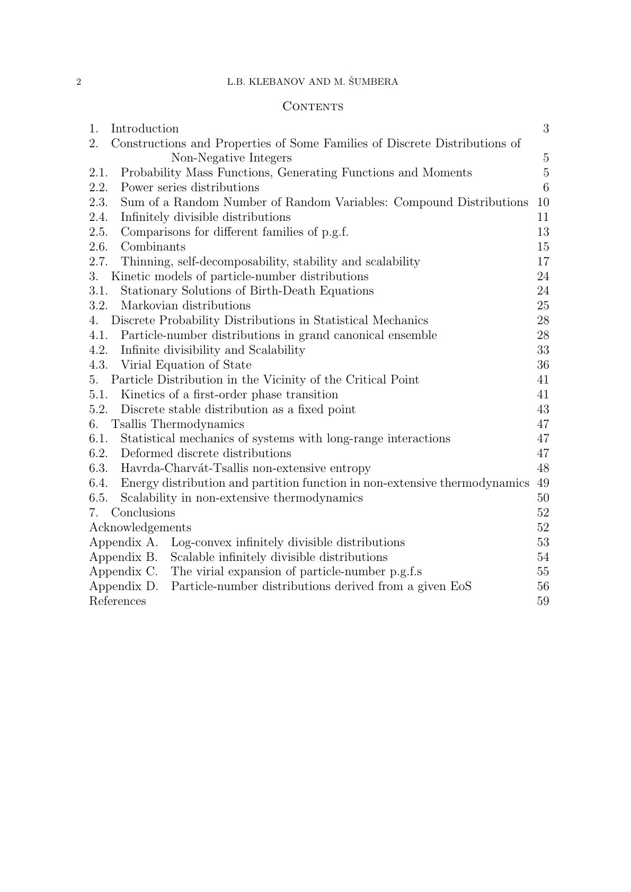
<figcaption class="paper-figure-caption"><b>Fig 1.</b> Low-resolution page preview, page 2</figcaption>
</figure>
<figure class="paper-figure-card">
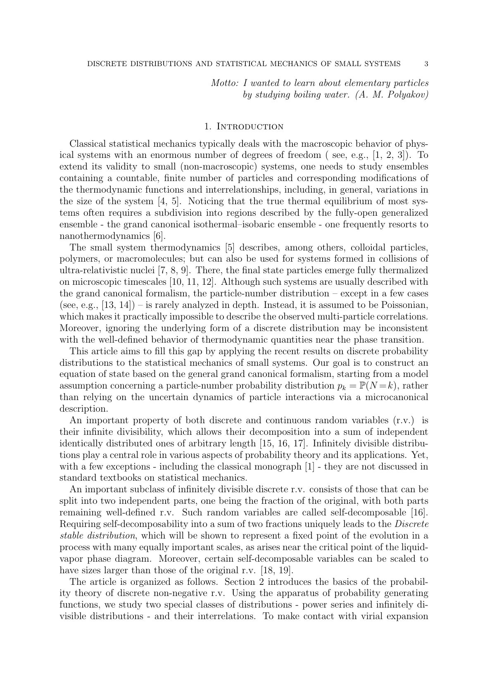
<figcaption class="paper-figure-caption"><b>Fig 2.</b> Low-resolution page preview, page 3</figcaption>
</figure>
<figure class="paper-figure-card">
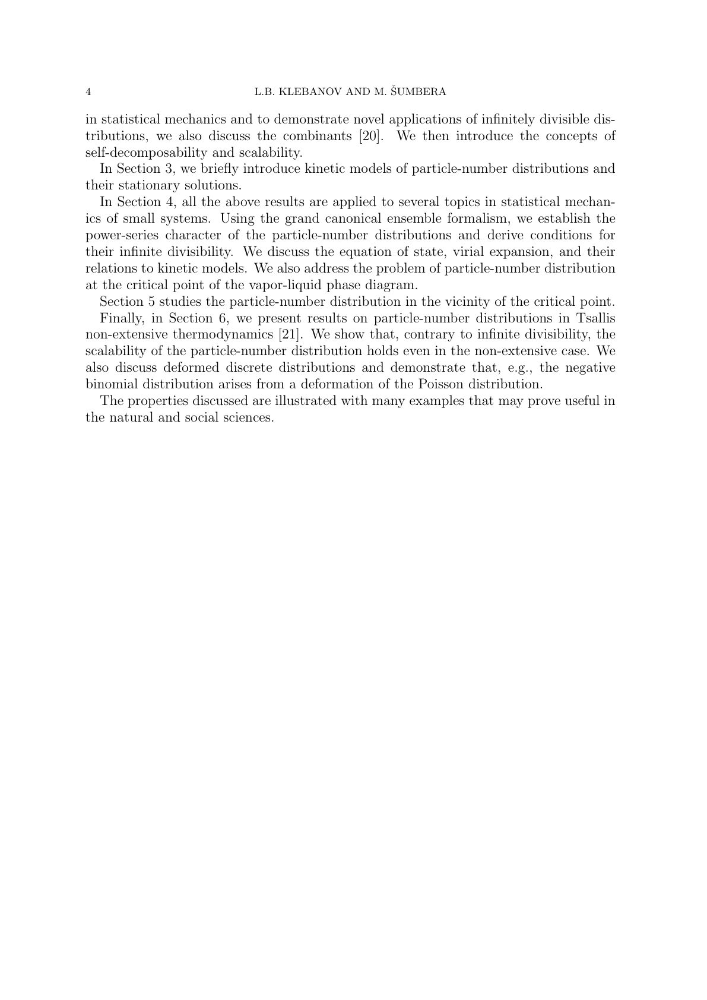
<figcaption class="paper-figure-caption"><b>Fig 3.</b> Low-resolution page preview, page 4</figcaption>
</figure>
<figure class="paper-figure-card">
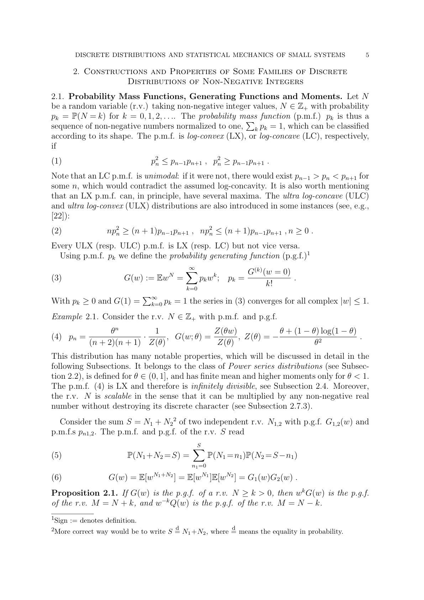
<figcaption class="paper-figure-caption"><b>Fig 4.</b> Low-resolution page preview, page 5</figcaption>
</figure>
<figure class="paper-figure-card">
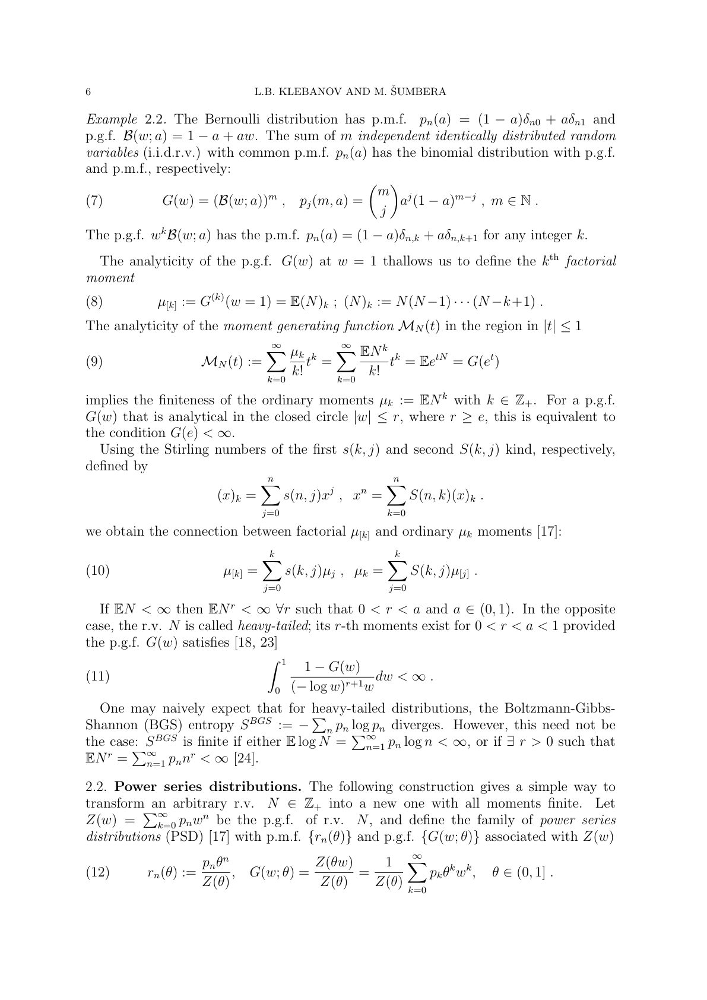
<figcaption class="paper-figure-caption"><b>Fig 5.</b> Low-resolution page preview, page 6</figcaption>
</figure>
</div>

<p><strong>Summary.</strong> This work develops a theoretical framework linking advanced concepts in discrete probability distributions—such as infinite divisibility and scalability—to the statistical mechanics of small systems. By applying these mathematical tools, the authors model phase transitions and derive equations of state for interacting gases. It provides a powerful combinatorial approach to understanding critical phenomena beyond standard assumptions.</p>
<p><strong>Why it may be interesting.</strong> While the focus is on classical statistical mechanics, the rigorous mathematical treatment of distribution properties (like infinite divisibility and scaling) has deep parallels with quantum many-body theories involving correlation functions or reduced density matrices.</p>
<details>
<summary>Detailed structure</summary>
<p><strong>Main problem.</strong> The paper investigates the mathematical connections between discrete probability distributions and the statistical mechanics description of small, interacting systems.</p>
<p><strong>Main result.</strong> It establishes that the particle-number distribution at a critical point converges to the Discrete Stable distribution, and it extends these concepts to non-extensive thermodynamics while maintaining scalability properties.</p>
<p><strong>Method.</strong> The analysis heavily relies on probability generating functions (p.g.f.) to develop theories for infinitely divisible and scalable distributions, applying these tools within the grand canonical ensemble framework.</p>
<p><strong>Model / system.</strong> The study focuses on the particle-number distribution $p_k$ in small systems, modeling phenomena like liquid-vapor phase transitions using kinetic models and analyzing equations of state (e.g., van der Waals).</p>
<p><strong>Key observables.</strong> Particle-number distribution ($p_k$), Equation of State ($eta p$ vs $
ho$), Virial coefficients, and the Discrete Stable distribution.</p>
<p><strong>Important parameters / regimes.</strong> Critical point parameters ($
ho_c, T_c$), temperature ratios ($    au = T/T_c$), and non-extensivity parameter $q$.</p>
<p><strong>Assumptions / limitations.</strong> The analysis often assumes infinite divisibility in the grand canonical ensemble, though it also explores regimes where this fails (e.g., Tsallis thermodynamics).</p>
<p><strong>Figures summary.</strong> Not specified.</p>
<p><strong>Paper structure.</strong> The paper progresses from developing general mathematical tools using p.g.f.s for discrete distributions to applying these tools to construct equations of state and analyze phase transitions in statistical mechanics.</p>
</details>
<details>
<summary>Abstract</summary>
<p>We study connections between discrete probability distributions and the statistical mechanics of small systems. Using probability generating functions, we develop the theory of power series, infinitely divisible, and scalable distributions of non-negative integer-valued random variables, and introduce the class of Markovian distributions that arise naturally in stationary solutions of birth-death processes and in scalable infinitely divisible distributions.   These results are applied to the grand canonical ensemble description in statistical mechanics: the infinite divisibility leads to a quasiparticle picture of an interacting gas, and the virial expansion is linked to the combinants of the distribution. A kinetic model of the liquid-vapor phase transition is presented, in which the particle-number distribution at the critical point converges to the Discrete Stable distribution - the fixed point of a renormalization semi-group transformation. We also show that the scalability of the particle-number distribution is preserved in Tsallis non-extensive thermodynamics, even though infinite divisibility fails. Moreover, deformed discrete distributions, including the negative binomial as a q-deformation of the Poisson, arise naturally in this setting.</p>
</details>
<p><sub><a href="#top">↑ back to top</a></sub></p>

<p><a id="paper-2607.19212"></a></p>
<h3 id="teleportation-game-quantum-teleportation-in-multi-agent-systems-for-interactive-music"><a href="http://arxiv.org/abs/2607.19212v1">Teleportation Game: Quantum Teleportation in Multi-Agent Systems for Interactive Music</a></h3>
<p><strong>Authors:</strong> Eduardo Reck Miranda, Scott Yeiichi Oshiro<br>
<strong>Type:</strong> both · <strong>Category:</strong> quantum information and computing · <strong>PDF:</strong> <a href="https://arxiv.org/pdf/2607.19212v1">https://arxiv.org/pdf/2607.19212v1</a><br>
<strong>Analysis basis:</strong> full PDF text, analyzed in chunks
<strong>Topic relevance:</strong> <code>QC/QI experiment</code> <strong>2/5</strong> · <code>correlated / nonlocal dissipation</code> <strong>1/5</strong> · <code>driven-dissipative phase transition</code> <strong>1/5</strong> · <code>entanglement &amp; information structure</code> <strong>1/5</strong> · <code>methods for driven-dissipative</code> <strong>1/5</strong> · <code>non-equilibrium dynamics</code> <strong>1/5</strong></p>
<div class="figure-strip-hint">↔ Scroll figures horizontally</div>
<div class="paper-figures-scroll">
<figure class="paper-figure-card">
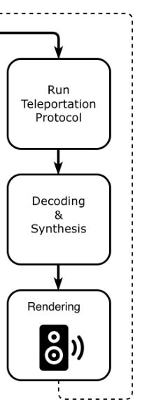
<figcaption class="paper-figure-caption"><b>Fig 1.</b> Figure 1: Quantum Agent System Pipeline.</figcaption>
</figure>
<figure class="paper-figure-card">
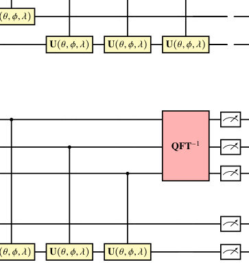
<figcaption class="paper-figure-caption"><b>Fig 2.</b> Figure 2: Quantum Circuit of a single quantum agent.</figcaption>
</figure>
<figure class="paper-figure-card">
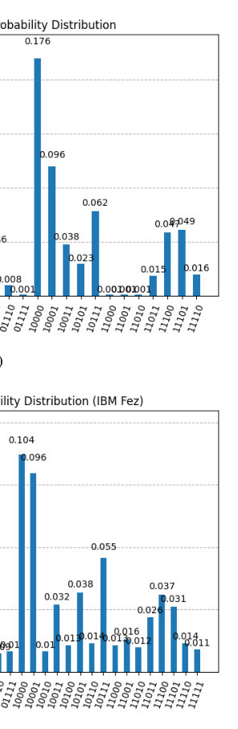
<figcaption class="paper-figure-caption"><b>Fig 3.</b> Figure 3: Probability distribution for a single quantum agent produced on (a) Qiskit’s Aer simulator and (b) ibm fez.</figcaption>
</figure>
<figure class="paper-figure-card">
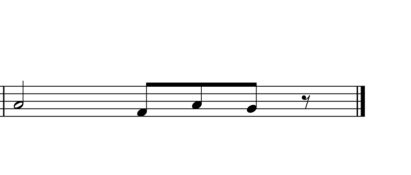
<figcaption class="paper-figure-caption"><b>Fig 4.</b> Figure 4: Single agent (a) melodic and rhythmic qubit signals and (b) decoded music notation produced with Aer simulator.</figcaption>
</figure>
<figure class="paper-figure-card">
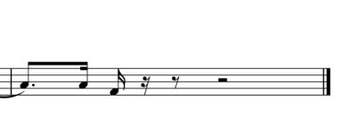
<figcaption class="paper-figure-caption"><b>Fig 5.</b> Figure 5: Single agent (a) melodic and rhythmic qubit signals and (b) decoded music notation produced with the IBM quantum hardware, ibm fez.</figcaption>
</figure>
</div>

<p><strong>Summary.</strong> This work designs a novel interactive music system using quantum agents that communicate through quantum teleportation. It treats noise and decoherence not as failures, but as controllable parameters defining the 'interpretative distance' between musical ideas. This frames quantum communication in an artistic context, suggesting new ways to model complex, non-ideal interactions in quantum computation.</p>
<p><strong>Why it may be interesting.</strong> The focus on interpreting noise/decoherence as controllable, expressive parameters ($\theta$) provides an analogy for studying non-ideal quantum channels or open system dynamics where the 'error' itself carries information about the interaction.</p>
<details>
<summary>Detailed structure</summary>
<p><strong>Main problem.</strong> To develop an interactive music system where quantum agents communicate via teleportation, supporting ambiguous interactions akin to free Jazz improvisation.</p>
<p><strong>Main result.</strong> The paper demonstrates that agent interaction can be modeled as a continuous space of interpretative distance, rather than binary success/failure, by tuning the fidelity of state transfer.</p>
<p><strong>Method.</strong> It uses quantum teleportation protocols combined with Single Qubit Probability Amplitude Modulation (SQPAM) and Quantum Phase Estimation (QPE) to encode musical features into quantum states.</p>
<p><strong>Model / system.</strong> The system operates on NISQ-era quantum computers, simulating multi-agent communication where the core mechanism is controlled unitary evolution ($U(	heta, \phi, \lambda)$) mediated by teleportation.</p>
<p><strong>Key observables.</strong> Melodic correlation, pitch-set distance, state fidelity ($\mathcal{F}$), and Hamming Distance are used to quantify agent interaction quality.</p>
<p><strong>Important parameters / regimes.</strong> The rotation angle $\theta$ in the interpreter module is crucial for tuning interpretative behavior; NISQ constraints themselves are treated as creative affordances ('quantum whispers').</p>
<p><strong>Assumptions / limitations.</strong> The system assumes that continuous audio features can be mapped effectively to discrete quantum gate parameters, and it embraces noise rather than treating it solely as an error.</p>
<p><strong>Figures summary.</strong> Figures illustrate the overall pipeline (Audio $\rightarrow$ Circuit $\rightarrow$ Teleportation $\rightarrow$ Output), single-agent circuits, multi-agent teleportation schemes, and fidelity distributions showing how varying parameters affects state overlap.</p>
<p><strong>Paper structure.</strong> The paper progresses from establishing the full quantum agent system pipeline using feature extraction (Chunk 1) to implementing the core teleportation mechanism (Chunk 2), and finally refining the model by introducing a tunable interpreter module to analyze continuous interpretative behavior in multi-agent cascades (Chunks 3 &amp; 4).</p>
</details>
<details>
<summary>Abstract</summary>
<p>This paper introduces an interactive music system with quantum musical agents that communicate by teleporting quantum states to one another. Human performers interact in real time with agents whose melodic and rhythmic behaviours are encoded as quantum states using Single Qubit Probability Amplitude Modulation (SQPAM) and structured through Quantum Phase Estimation (QPE). Up to three agents are combined within a single quantum circuit, with directed communication via quantum teleportation. We are interested in supporting ambiguous, transformative interactions reminiscent of free Jazz improvisation. Therefore, rather than treating noise and decoherence as limitations, the system embraces NISQ-era constraints as creative affordances, framing agent communication as quantum whispers, that is, deliberate, musically expressive imperfections in state transfer. We provide demonstrations and analyses based on melodic correlation, pitch-set distance, and state fidelity, where a continuum between imitation and divergence can be observed. We developed a tunable interpretation method to assess how agents reinterpret teleported states. This work positions teleportation as a promising interaction mechanism for agent-based quantum computer music and outlines future directions toward distributed ensembles connected via the Quantum Internet.</p>
</details>
<p><sub><a href="#top">↑ back to top</a></sub></p>

<p><a id="paper-2607.18427"></a></p>
<h3 id="aromatic-molecular-emitters-in-a-hexagonal-boron-nitride-stack"><a href="http://arxiv.org/abs/2607.18427v1">Aromatic molecular emitters in a hexagonal boron nitride stack</a></h3>
<p><strong>Authors:</strong> Tianyu Fang, Ricardo Gioia Alvarez, Babak Behjati, Moritz Scharfstädt, Max Masuhr, Bo Deng, Noah Henseler, Andrea Bergschneider, Stefan Linden, Christian Schäfer, Daqing Wang<br>
<strong>Type:</strong> both · <strong>Category:</strong> other · <strong>PDF:</strong> <a href="https://arxiv.org/pdf/2607.18427v1">https://arxiv.org/pdf/2607.18427v1</a><br>
<strong>Analysis basis:</strong> full PDF text, analyzed in chunks
<strong>Topic relevance:</strong> <code>quantum optics experiment</code> <strong>2/5</strong> · <code>Keldysh / 2PI / non-Gaussian methods</code> <strong>1/5</strong> · <code>QC/QI experiment</code> <strong>1/5</strong> · <code>driven-dissipative phase transition</code> <strong>1/5</strong> · <code>methods for driven-dissipative</code> <strong>1/5</strong></p>
<div class="figure-strip-hint">↔ Scroll figures horizontally</div>
<div class="paper-figures-scroll">
<figure class="paper-figure-card">
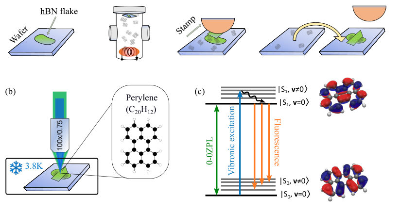
<figcaption class="paper-figure-caption"><b>Fig 1.</b> Figure 1: (a) Sample fabrication routine. An hBN flake is first prepared on a silicon wafer capped with a SiO2 layer. The substrate is then transferred into the evaporation chamber. After deposition, a second hBN flake is picked up by a polymer dome and stacked on the deposited hBN flake. The stack is picked up and transferred to a clean silicon substrate. (b) The sample is transferred to a closed-cycle cryostat, cooled to 3.8 Kelvin and studied under an optical microscope. Inset shows the molecular structure of perylene. (c) A simplified energy level diagram of perylene. The two images on the right side display the π-orbitals involved in the |S0⟩to |S1⟩transition.</figcaption>
</figure>
<figure class="paper-figure-card">
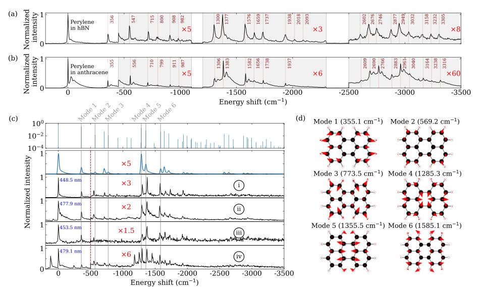
<figcaption class="paper-figure-caption"><b>Fig 2.</b> Figure 2: Fluorescence spectrum measured from a focal spot on the hBN stack (a) compared to the emission spectrum of perylene in anthracene (b). The horizontal axis denotes the relative energy shift to the ZPL, expressed in inverse centimeters. The vibronic bands are scaled differently in intensity for visual effect. (c) Comparison to theory. The blue vertical bars in the top panel present the vibrational modes of perylene in an hBN slab. The height of each bar represents the Franck-Condon factors derived from ab initio calculations. Only six modes and their overtones are plotted. The blue curve shows a modeled emission spectrum, which considers a broadening by the spectrometer and the...</figcaption>
</figure>
<figure class="paper-figure-card">
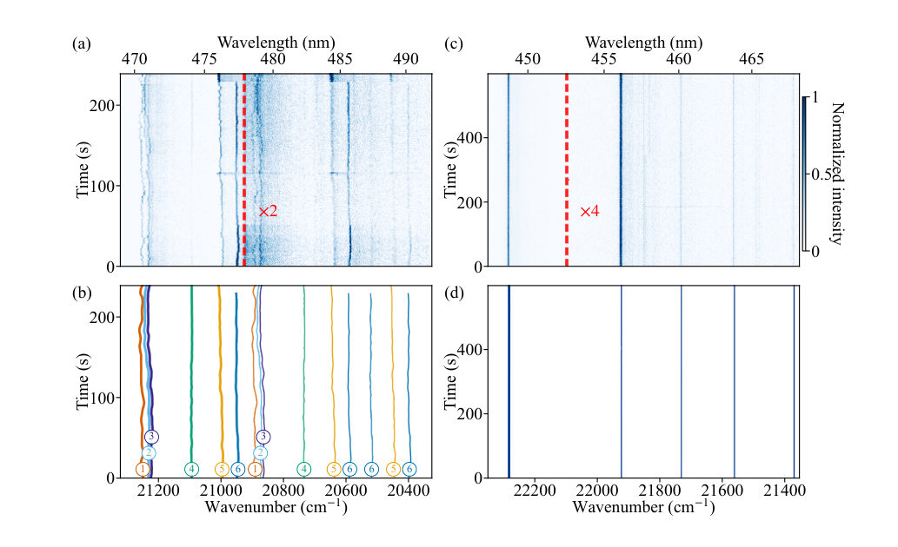
<figcaption class="paper-figure-caption"><b>Fig 3.</b> Figure 3: (a) Emission spectrum measured on a laser focal spot on a non-baked sample over 200 seconds. (b) Extracted frequency traces of 6 molecules. Each molecule is represented by one color. The opaque lines denote the ZPL transition, and the semi-transparent lines are the vibronic transitions. (c) An emission spectrum measured on a sample after baking. (d) Extracted time traces of the ZPL and vibronic lines for the data in (c).</figcaption>
</figure>
<figure class="paper-figure-card">
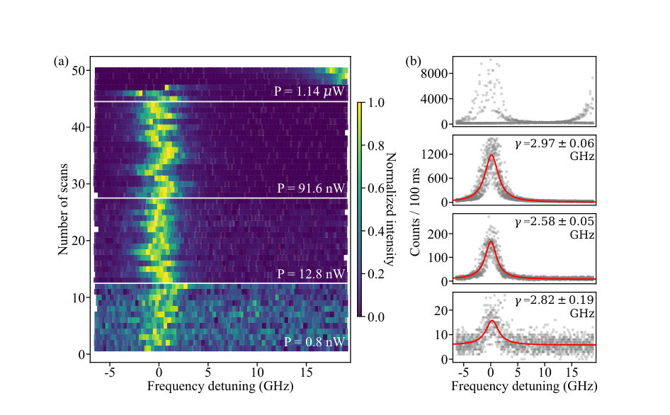
<figcaption class="paper-figure-caption"><b>Fig 4.</b> Figure 4: Fluorescence excitation spectra of the ZPL transition of a single perylene molecule. (a) The ZPL excitation traces measured with gradually increased laser intensities. The duration of a single frequency sweep was 12 seconds. The color scale is normalized in each scan. Spectral jumps occur at the highest excitation power. (b) Excitation spectra at each laser power. The gray dots show the accumulated data from (a) without post-aligning the center resonance frequency of each individual scan. The red lines denote fits to a Lorentzian function. The extracted full-width at half-maximum linewidth γ is given in the legend.</figcaption>
</figure>
<figure class="paper-figure-card">
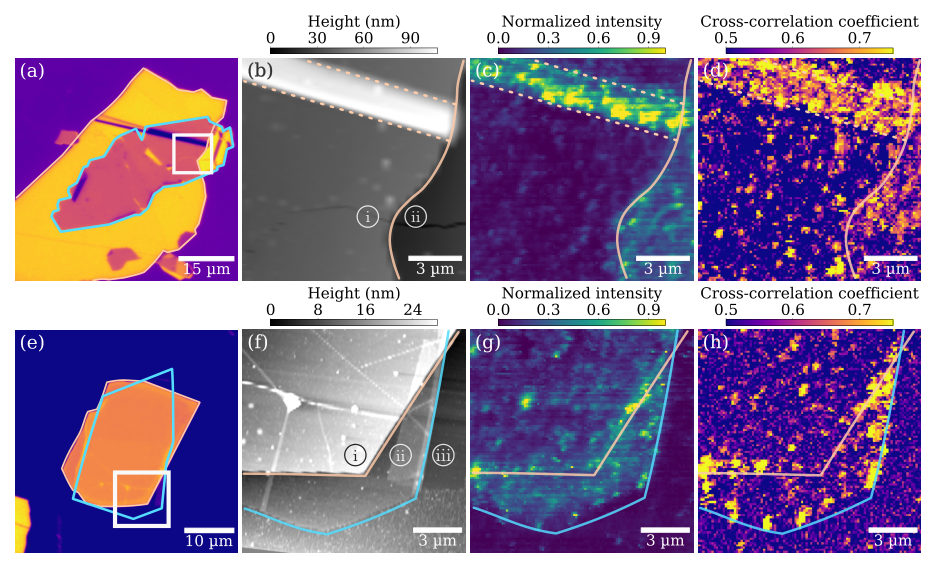
<figcaption class="paper-figure-caption"><b>Fig 5.</b> Figure 5: Spatial distribution of perylene emissions analyzed through hyperspectral mea- surements on two samples. (a), (e) Optical microscope images of the two samples. Orange and blue contours illustrate the boundaries of the lower and upper hBN flakes, respectively. (b), (f) Atomic force microscope measurements. The top and bottom flakes in (b) have a thickness of 21 nm and 31 nm, respectively. The sample in (f) has a 22-nm-thick bottom flake and a 2-nm-thick top flake. (c), (g) Integrated fluorescence intensity distributions. (d), (h) Normalized correlation function with respect to the emission spectrum of perylene.</figcaption>
</figure>
</div>

<p><strong>Summary.</strong> The research demonstrates the successful incorporation and spectroscopic characterization of perylene molecular emitters into hexagonal boron nitride (hBN) stacks. By analyzing narrow zero-phonon-line transitions and vibronic spectra at cryogenic temperatures, the authors confirm that while hBN offers a promising platform, molecular binding is critically dependent on structural defects rather than pristine lattice sites. This provides key guidelines for deterministically engineering such quantum emitter devices.</p>
<p><strong>Why it may be interesting.</strong> This work directly addresses the integration challenge for solid-state quantum emitters by demonstrating high-fidelity optical characterization within a 2D van der Waals heterostructure, which is crucial for realizing scalable quantum devices.</p>
<details>
<summary>Detailed structure</summary>
<p><strong>Main problem.</strong> To investigate the feasibility of directly embedding narrow-linewidth molecular quantum emitters (perylene) into van der Waals hexagonal boron nitride (hBN) stacks and characterizing their photophysical properties.</p>
<p><strong>Main result.</strong> The study successfully observed gigahertz-narrow zero-phonon-line transitions, confirming that while pristine hBN tends to expel molecules, morphological defects stabilize the binding. The spectral analysis provides insights into the host-molecule interaction mechanism.</p>
<p><strong>Method.</strong> A combination of cryogenic optical spectroscopy (measuring ZPL and vibronic spectra) and advanced theoretical calculations (quantum chemistry/DFT) was employed for analysis.</p>
<p><strong>Model / system.</strong> The physical system is perylene molecules embedded within multi-layered hexagonal boron nitride (hBN) stacks, mimicking a solid-state quantum emitter platform. The analysis involves modeling excited-state relaxation and vibrational coupling between the molecule and the host lattice.</p>
<p><strong>Key observables.</strong> Zero-phonon-line (ZPL) transition linewidth ($\approx 2.8\ 	ext{GHz}$), vibronic spectral peaks, phonon sideband shapes, and spatial mapping of emission intensity.</p>
<p><strong>Important parameters / regimes.</strong> Cryogenic temperatures (e.g., 3.8 K); the electronic structure parameters derived from quantum chemistry calculations; defect concentrations in hBN.</p>
<p><strong>Assumptions / limitations.</strong> The analysis assumes that spectral matching techniques like LNCC can reliably identify molecular fingerprints even when broadened by the host environment, and that environmental stability is governed by surface defects rather than bulk properties.</p>
<p><strong>Figures summary.</strong> Figures illustrate sample fabrication, compare fluorescence spectra from hBN vs. anthracene hosts showing vibronic peak agreement but sideband differences, and map ZPL wavelengths across samples to show spatial heterogeneity.</p>
<p><strong>Paper structure.</strong> The paper progresses from initial characterization of the ZPL transition in the hBN stack, through detailed spectral comparisons with reference molecules (anthracene), to advanced techniques like LNCC matching for site-specific analysis, concluding with structural insights regarding molecular binding sites.</p>
</details>
<details>
<summary>Abstract</summary>
<p>Single polycyclic aromatic hydrocarbon molecules embedded in organic matrices have proven to be an excellent family of narrow-linewidth quantum emitters. Extending this host-guest setting to van der Waals materials offers the opportunity to combine the preeminent properties of molecular emitters with the access to the versatility of two-dimensional hetero-structures and devices. In this work, we incorporate perylene molecules into multi-layered hexagonal boron nitride stacks and observe gigahertz-narrow zero-phonon-line transitions at cryogenic temperatures. We unambiguously verify the origins of photon emission through vibronic spectra analysis. By combining hyperspectral localization measurements with quantum chemistry calculations, we examine the insertion mechanisms of perylene molecules in the hexagonal boron nitride stacks, and conclude that pristine hBN layers tend to expel molecules from the sandwich, while extended morphological defects, hydroxyl groups and unpassivated boron and nitrogen atoms assist to stabilize molecular bindings to hBN. Our work provides valuable insight for future work to deterministically integrate narrow-linewidth molecular emitters into van der Waals devices.</p>
</details>
<p><sub><a href="#top">↑ back to top</a></sub></p>

<p><a id="paper-2607.19265"></a></p>
<h3 id="symmetry-protected-cubic-touching-topological-surface-bands-with-tunable-singularities"><a href="http://arxiv.org/abs/2607.19265v1">Symmetry-protected cubic-touching topological surface bands with tunable singularities</a></h3>
<p><strong>Authors:</strong> Jingtian Shi, Taylor L. Hughes, Ivar Martin<br>
<strong>Type:</strong> theory · <strong>Category:</strong> strongly correlated electrons · <strong>PDF:</strong> <a href="https://arxiv.org/pdf/2607.19265v1">https://arxiv.org/pdf/2607.19265v1</a><br>
<strong>Analysis basis:</strong> full PDF text, analyzed in chunks
<strong>Topic relevance:</strong> <code>analog quantum simulation</code> <strong>2/5</strong> · <code>Keldysh / 2PI / non-Gaussian methods</code> <strong>1/5</strong> · <code>driven-dissipative phase transition</code> <strong>1/5</strong> · <code>methods for driven-dissipative</code> <strong>1/5</strong></p>
<div class="figure-strip-hint">↔ Scroll figures horizontally</div>
<div class="paper-figures-scroll">
<figure class="paper-figure-card">
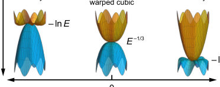
<figcaption class="paper-figure-caption"><b>Fig 1.</b> FIG. 1. Schematics of various types of cubic-touching sur- face bands tuned by two phenomenological factors α, β: Ek ∝αk2 ± k3 + + βk3 − , where k± = kx ± iky. Order of DOS singularity is marked for each case.</figcaption>
</figure>
<figure class="paper-figure-card">
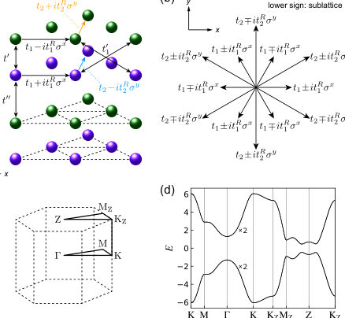
<figcaption class="paper-figure-caption"><b>Fig 2.</b> FIG. 2. (a) An illustration of the triangular prism lattice tight-binding model in Eq. (5), with inter-site tunneling ma- trices represented with arrows. The coordinate frame is shown on the bottom left. (b) All tunneling matrices within the xy- plane. (c) The 3D Brillouin zone (BZ) of the system. (d) A typical 3D band structure of the model along the solid lines shown in (c), in which both bands are doubly degenerate.</figcaption>
</figure>
<figure class="paper-figure-card">
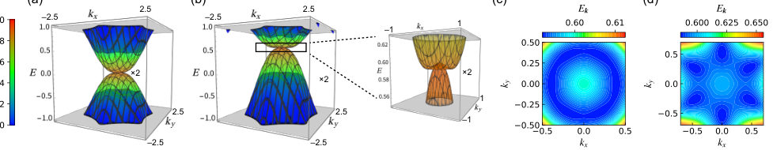
<figcaption class="paper-figure-caption"><b>Fig 3.</b> FIG. 3. (a) The band structure of an xy-slab containing 50 unit cells in the z-direction, whose corresponding bulk Hamiltonian is H0(k) with t′ = 1.5, t′′ = 1, t′ 1 = −0.2, tR 1 = 1, and tR 2 = 0.2. The color scale represents the surface vs. bulk character of the states where warmer colors toward red indicate surface states, and cooler colors toward blue represent states with a bulk character. (b) The same as (a) but with the particle-hole-symmetry-breaking term HP (k) added with t1 = 0.1 and t2 = 0. The zoomed-in band touching structure is shown on the right. (c) The 2D constant energy contours of the first surface conduction band in (b), i.e., the first band above the touching point,...</figcaption>
</figure>
</div>

<p><strong>Summary.</strong> This work characterizes a family of topological surface bands in 3D TCIs featuring symmetry-protected cubic band touching. By tuning parameters related to particle-hole asymmetry, the system's dispersion can be continuously morphed between several distinct forms. This tunability allows for precise engineering of electronic properties, particularly the density of states singularities, which is crucial for realizing strongly correlated quantum phases.</p>
<p><strong>Why it may be interesting.</strong> The explicit connection between crystal symmetries, topological band degeneracies (cubic touching), and the resulting tunable density of states makes this highly relevant for designing novel correlated electronic phases in solid-state systems.</p>
<details>
<summary>Detailed structure</summary>
<p><strong>Main problem.</strong> The study proposes a class of topological surface bands in 3D Topological Crystalline Insulators (TCIs) that exhibit symmetry-protected cubic-order band touching.</p>
<p><strong>Main result.</strong> The research demonstrates that the band dispersion can be continuously tuned between cubic, moat, and multi-mini-valley structures by adjusting particle-hole asymmetry and anisotropy. This results in a versatile platform for engineering tunable density-of-state singularities ranging from power-law to logarithmic divergences.</p>
<p><strong>Method.</strong> The analysis uses symmetry constraints (T, P, M, $J_z$) applied to a k.p Hamiltonian derived from a prism-lattice tight-binding model to characterize the surface band structure and its degeneracies.</p>
<p><strong>Model / system.</strong> The physical system is modeled using a bulk tight-binding approach on a prism lattice for angular-momentum-$3/2$ electrons, analyzed via effective 1D models at high-symmetry points ($\Gamma$, M).</p>
<p><strong>Key observables.</strong> Band dispersion types (cubic, moat, mini-valley), Density of States (DOS) singularity order ($\sim E^{-1/3}$, $\sim \ln E$), and the topological invariant (winding number).</p>
<p><strong>Important parameters / regimes.</strong> Particle-hole asymmetry parameters ($\alpha, eta$) and anisotropy terms ($t_{R2}$), which control the transition between different band structures.</p>
<p><strong>Assumptions / limitations.</strong> The analysis relies on assuming specific symmetry representations for T, P, M, and $J_z$, and uses a k.p expansion approximation.</p>
<p><strong>Figures summary.</strong> Figures illustrate schematics of various cubic-touching surface bands tuned by parameters $\alpha$ and $eta$; one figure shows the band structure evolution in an xy-slab under symmetry breaking; another details the prism lattice model.</p>
<p><strong>Paper structure.</strong> The paper proceeds by establishing the general symmetry constraints on the Hamiltonian, deriving effective 1D models at high-symmetry points ($\Gamma$, M), analyzing how specific symmetries protect cubic touching, and finally demonstrating tunability via parameter variation to achieve different DOS singularities.</p>
</details>
<details>
<summary>Abstract</summary>
<p>We propose a class of topological surface bands in three-dimensional topological crystalline insulators that have symmetry-protected cubic-order band touching. Within the symmetry constraint, the band dispersion can continuously vary between cubic dispersion, moat band and multi-mini-valley structure with van Hove singularities by adjusting particle-hole asymmetry and anisotropy. Thus, there is a family of tunable density-of-state singularities ranging from power-law to logarithmic divergences. This offrs a versatile platform for engineering strongly correlated phases of matter in topological surface states. We provide an example realization in a prism-lattice tight-binding model of angular-momentum-3/2 electrons.</p>
</details>
<p><sub><a href="#top">↑ back to top</a></sub></p>

<p><a id="paper-2607.19221"></a></p>
<h3 id="statistical-properties-of-quadrangular-surfaces"><a href="http://arxiv.org/abs/2607.19221v1">Statistical properties of quadrangular surfaces</a></h3>
<p><strong>Authors:</strong> Hrant Topchyan, Rudik Badalyan, Ara Sedrakyan<br>
<strong>Type:</strong> theory · <strong>Category:</strong> statistical mechanics · <strong>PDF:</strong> <a href="https://arxiv.org/pdf/2607.19221v1">https://arxiv.org/pdf/2607.19221v1</a><br>
<strong>Analysis basis:</strong> full PDF text, analyzed in chunks
<strong>Topic relevance:</strong> <code>non-equilibrium universality</code> <strong>2/5</strong> · <code>driven-dissipative phase transition</code> <strong>1/5</strong> · <code>non-equilibrium dynamics</code> <strong>1/5</strong></p>
<div class="figure-strip-hint">↔ Scroll figures horizontally</div>
<div class="paper-figures-scroll">
<figure class="paper-figure-card">

<figcaption class="paper-figure-caption"><b>Fig 1.</b> FIG. 1: The representations of random surfaces. A disordered potential (color map: increasing from blue to brown), with marked extrema points (Sp: green, Min: blue, Max: red) and connections Sp-Min (blue lines), Sp-Max (red lines), Min-Max with a common Sp (yellow lines) and Sp-Sp with a common Min/Max (black arrows). The extrema surface (ES): all extrema as nodes, Sp-Min and Sp-Max lines as links, and faces Sp-Min-Sp-Max; the scattering network (SN): Sp-s as nodes, Sp-Sp lines as links, and Min-s/Max-s corresponding to the faces; the dual of SN (dSN), Min-s and Max-s as nodes, Min-Max lines as links, as Sp-s representing the faces; the percolation lattice (PL): Min-s as nodes, polylines...</figcaption>
</figure>
<figure class="paper-figure-card">

<figcaption class="paper-figure-caption"><b>Fig 2.</b> FIG. 2: The surface modifications in different representations. The notations are the same as in Fig.1. The line segment fans represent an arbitrary continuation of the surface.</figcaption>
</figure>
<figure class="paper-figure-card">

<figcaption class="paper-figure-caption"><b>Fig 3.</b> FIG. 3: The decompositions of operations A†, R and AA† in dSN representation. Colors are there for the ease of following the procedure and don’t represent anything.</figcaption>
</figure>
<figure class="paper-figure-card">

<figcaption class="paper-figure-caption"><b>Fig 4.</b> FIG. 4: The bipartite (red and blue points) dSN surface (black lines), the diagonals η0 (dashed) and η′ (solid) (red lines), the corresponding opposites ¯η0 and ¯η′ (blue lines) and an example of a chain {¯ηi} continuously connecting them (green lines).</figcaption>
</figure>
<figure class="paper-figure-card">

<figcaption class="paper-figure-caption"><b>Fig 5.</b> FIG. 5: A GKNS realization on a regular network in the PL representation. The Min (blue nodes and lines) and Max (red nodes and lines) partitions, with the occupied (highlighted) links being depicted thickened. Green dots portray the Sp-s of the initial ES representation.</figcaption>
</figure>
</div>

<p><strong>Summary.</strong> This paper compares the statistical geometries of three types of random quadrangular surfaces (GKNS, DQ, GQ) used as models for 2D quantum gravity. By analyzing observables like Hausdorff dimension and degree distributions, the authors demonstrate that GKNS defines a unique universality class distinct from standard triangulations. This suggests new geometric frameworks applicable to non-critical string theories.</p>
<p><strong>Why it may be interesting.</strong> While focused on geometry, the rigorous statistical mechanics approach to characterizing universality classes and critical phenomena in random manifolds has parallels with understanding phase transitions or emergent order in complex quantum many-body systems.</p>
<details>
<summary>Detailed structure</summary>
<p><strong>Main problem.</strong> The study investigates and compares the statistical geometric properties of three different ensembles of random quadrangular surfaces: GKNS, Dynamical Quadrangulations (DQ), and General Quadrangulations (GQ).</p>
<p><strong>Main result.</strong> The analysis reveals that while DQ and GQ approach a Hausdorff dimension similar to standard DT ($\Delta_H \approx 4$), the GKNS ensemble defines a distinct class of random geometry with $\Delta_H \approx 2$.</p>
<p><strong>Method.</strong> The authors use a unified graph-theoretic framework, analyzing underlying Markov chains, degree distributions, and distance statistics for all three ensembles.</p>
<p><strong>Model / system.</strong> The system consists of discrete surfaces modeled as quadrangulations (random graphs), which are used to study concepts related to 2D quantum gravity and non-critical string theories. The specific models include the GKNS construction and generalizations of dynamical triangulations (DQ/GQ).</p>
<p><strong>Key observables.</strong> Degree distributions (scale-free vs. exponential decay), Hausdorff dimension ($\Delta_H$), critical exponents ($
u, \gamma$), and scaling relations for surface area versus diameter.</p>
<p><strong>Important parameters / regimes.</strong> The critical probability ($p_0$) for the GKNS percolation process; the size/area ($S$); and the crossover diameter ($D_0$).</p>
<p><strong>Assumptions / limitations.</strong> The analysis assumes that the different randomization procedures (GKNS, DQ, GQ) define distinct but related ensembles of random surfaces.</p>
<p><strong>Figures summary.</strong> Figures illustrate surface representations derived from a disordered potential (ES, SN, dSN, PL), show surface modifications via specific operations ($A_\eta$, $R$), and depict scaling relationships between area and diameter for the different models.</p>
<p><strong>Paper structure.</strong> The paper establishes a unified graph-theoretic framework to relate elementary operations defining the ensembles. It then analyzes percolation properties (GKNS) and Markov chain convergence/scaling laws (DQ/GQ), culminating in a comparison of geometric observables like Hausdorff dimension across all three classes.</p>
</details>
<details>
<summary>Abstract</summary>
<p>We investigate the statistical properties of random quadrangular surfaces generated by different randomization procedures: the Gruzberg-Klümper-Nuding-Sedrakyan (GKNS) construction, and two newly introduced generalizations of dynamical triangulations (DT), dynamical (DQ) and general quadrangulations (GQ). We formulate these surfaces within a unified graph-theoretic framework and establish the relationships between the elementary operations defining the different ensembles. For GKNS surfaces, we demonstrate that the construction is equivalent to two mutually constrained percolation processes and determine the associated critical point and critical exponents, revealing deviations from ordinary percolation. For DQ and GQ, we analyze the underlying Markov chains and determine the scaling of mixing and relaxation times. We further analyze all three ensembles through their degree distributions, degree correlations, distance statistics, and Hausdorff dimensions. While DQ exhibits exponentially decaying degree distributions and geometric properties similar to DT, GKNS and GQ display broad, scale-free degree distributions. Moreover, GKNS surfaces possess an asymptotic Hausdorff dimension $Δ_H\approx 2$, whereas DQ and GQ approach $Δ_H\approx 4$, similarly to DT. This indicates that DQ is compatible with the universal behavior of DT, while GKNS and GQ define distinct classes of random geometry, implying a different underlying measure in the space of random surfaces and a possible geometric framework for a new class of noncritical string theories.</p>
</details>
<p><sub><a href="#top">↑ back to top</a></sub></p>

<p><a id="paper-2607.18486"></a></p>
<h3 id="equivariant-continuous-normalizing-flows-with-offline-sampling-for-fermionic-ground-state-estimation"><a href="http://arxiv.org/abs/2607.18486v1">Equivariant Continuous Normalizing Flows with Offline Sampling for Fermionic Ground State Estimation</a></h3>
<p><strong>Authors:</strong> Sam Cochran, James B. Larsen, Andrew Wray, Michael J. Keiser, Chad Rigetti, Shravan Veerapaneni<br>
<strong>Type:</strong> both · <strong>Category:</strong> numerical methods · <strong>PDF:</strong> <a href="https://arxiv.org/pdf/2607.18486v1">https://arxiv.org/pdf/2607.18486v1</a><br>
<strong>Analysis basis:</strong> full PDF text, analyzed in chunks
<strong>Topic relevance:</strong> <code>analog quantum simulation</code> <strong>2/5</strong> · <code>methods for driven-dissipative</code> <strong>1/5</strong></p>
<div class="figure-strip-hint">↔ Scroll figures horizontally</div>
<div class="paper-figures-scroll">
<figure class="paper-figure-card">

<figcaption class="paper-figure-caption"><b>Fig 1.</b> FIG. 1. Visualization of a trained CNF wavefunction for two fermions in a one-dimensional harmonic trap with repulsive Coulomb interaction. Left: Slater determinant base wavefunction ψbase, built from the first two harmonic oscillator orbitals; this is the exact ground state of the non-interacting system. Blue indicates positive values, red negative. Antisymmetry under particle exchange can be seen in the opposite signs of the two wavefunction lobes reflected across the Pauli exclusion diagonal x1 = x2. Center: Trained wavefunction ψtarget after flow optimization; the increased lobe separation corresponds to the flow learning interparticle repulsion. Note that antisymmetry is preserved....</figcaption>
</figure>
<figure class="paper-figure-card">

<figcaption class="paper-figure-caption"><b>Fig 2.</b> FIG. 2. Comparison of the sampling procedures required for training NQS and CNF wavefunctions. NQS models (a) define the wavefunction ψθ directly using the output of a neural network. Sampling from the NQS Born distribution requires sequential MCMC sampling at each training iteration. Generating independent and unbiased samples xj with this method necessitates burn-in steps (red boxes) and thinning steps (gray boxes), both of which expend compute without directly producing usable samples. In contrast, the CNF approach (b) uses a neural network to define a vector field vθ whose time-one map transforms a base wavefunction to a target wavefunction. Using M base Born distribution samples z1, ....</figcaption>
</figure>
<figure class="paper-figure-card">

<figcaption class="paper-figure-caption"><b>Fig 3.</b> FIG. 3. Training pipeline for the CNF-based VMC frame- work. The offline phase (gray) runs MCMC once on the fixed base distribution Πbase to populate a sample cache of K con- figurations. Each training iteration (blue) draws a random batch from the cache, propagates each sample through the forward ODE to obtain exact target samples, computes lo- cal energies via augmented dynamics, and applies a MinSR natural gradient update to the parameters θ. No MCMC is performed at training time.</figcaption>
</figure>
<figure class="paper-figure-card">

<figcaption class="paper-figure-caption"><b>Fig 4.</b> FIG. 4. Per-iteration wall-clock time (top) and peak GPU memory usage (bottom) as a function of particle number N, comparing the augmented dynamics approach introduced in Section V with standard forward-over-reverse automatic dif- ferentiation through the ODE solve. Results are shown for the standard approach in both parallel and sequential modes. The ODE solve was fixed to use 10 steps, and runs were car- ried out on a single GPU using a PDS vector field over a Slater base. The augmented approach is faster and more memory- efficient than both standard variants across all system sizes tested.</figcaption>
</figure>
<figure class="paper-figure-card">

<figcaption class="paper-figure-caption"><b>Fig 5.</b> Figure 5 compares the four vector field architectures on a system of N = 10 harmonically trapped electrons in three dimensions. Convergence of energy and local energy variance is shown against both training iteration (a) and wall-clock time (b). Of the models trained using a Slater base, PDSG achieves the lowest converged en- ergy and local energy variance values, followed by FVF, PDS, and then DS. The separation is clearest in the local energy variance. Relative to the CISD reference energy, the three most accurate architectures converge close to CISD, while DS remains well above it. The architec- tures also differ in wall-clock convergence: DS converges fastest, PDS and PDSG are...</figcaption>
</figure>
</div>

<p><strong>Summary.</strong> The paper presents a novel Variational Monte Carlo approach for fermionic ground state estimation using Continuous Normalizing Flows (CNFs). By implementing the flow as a permutation-equivariant neural ODE, it achieves exact sampling from the learned wavefunction distribution without slow MCMC steps. This method demonstrates high accuracy and excellent GPU scaling for simulating interacting quantum particles.</p>
<p><strong>Why it may be interesting.</strong> This work provides a powerful, scalable alternative to traditional quantum Monte Carlo methods for strongly correlated systems by integrating continuous flow theory with fermionic symmetries, which is highly relevant for simulating complex quantum matter.</p>
<details>
<summary>Detailed structure</summary>
<p><strong>Main problem.</strong> The core problem is accurately estimating the ground state energy of fermionic many-body systems, which requires sampling complex, high-dimensional wavefunctions.</p>
<p><strong>Main result.</strong> The authors achieved ground-state energies for harmonically trapped spinless electrons that surpass established CISD reference values and demonstrated near-ideal strong GPU scaling up to 128 A100 GPUs.</p>
<p><strong>Method.</strong> They introduce a framework using Continuous Normalizing Flows (CNFs) to refine an antisymmetric base wavefunction via a permutation-equivariant neural ODE, enabling exact sampling without MCMC during training.</p>
<p><strong>Model / system.</strong> The system involves fermionic particles governed by a general Hamiltonian. The method uses CNFs built upon fixed antisymmetric bases like Slater or Jastrow-Slater determinants, which are refined by learning the flow's vector field.</p>
<p><strong>Key observables.</strong> Ground state energy ($E_0$), Born distribution ($\Pi_	heta$), and local energy variance (used for convergence diagnostics).</p>
<p><strong>Important parameters / regimes.</strong> System size $N$ (up to 48 particles), number of dimensions $D$, and training hyperparameters like learning rates and ODE tolerances.</p>
<p><strong>Assumptions / limitations.</strong> The method assumes the existence of an efficiently sampleable, antisymmetric base wavefunction; it also relies on the mathematical framework of CNFs applied to fermionic symmetries.</p>
<p><strong>Figures summary.</strong> Figure 1 visualizes how a trained CNF refines a base wavefunction (e.g., Slater determinant) into a more correlated target state via ODE trajectories. Figure 9 compares the convergence of CISD reference energies against increasing basis set cutoff ($n_{	ext{max}}$).</p>
<p><strong>Paper structure.</strong> The paper introduces the VMC framework, proposes using CNFs to overcome MCMC sampling limitations by leveraging offline base sample generation. It details novel equivariant vector field architectures (PDS, FVF, PDSG) and an augmented dynamics formulation for efficient kinetic energy calculation.</p>
</details>
<details>
<summary>Abstract</summary>
<p>We introduce a framework for fermionic variational Monte Carlo (VMC) in which a continuous normalizing flow (CNF) refines a fixed antisymmetric base wavefunction. The flow is implemented as a permutation-equivariant neural ODE, a smooth, topology-preserving map that learns correlations not captured by the base; equivariance preserves the antisymmetry of the base, so the flow can in principle improve any antisymmetric ansatz that can be sampled efficiently. We demonstrate this using Slater and Jastrow-Slater bases, though more expressive choices are admissible. Exact samples from the flow's Born distribution are obtained by pushing pre-cached base samples through the forward ODE, requiring no Markov chain Monte Carlo (MCMC) at training time. The base samples are generated offline and reused across training batches and runs, decoupling sample generation from parameter optimization and enabling embarrassingly parallel training across multiple GPUs. We introduce three novel permutation-equivariant vector field architectures: Pairwise Deep Sets (PDS), FermiNet Vector Fields (FVF), and Pairwise Deep Sets Gradient (PDSG), each offering a different balance of expressivity and computational cost. We further introduce an augmented dynamics formulation for kinetic energy computation that co-evolves the required derivative quantities as ODE state variables, eliminating differentiation through the ODE trajectory and yielding significant reductions in wall-clock time and memory. Training runs on systems of harmonically trapped spinless electrons demonstrate ground-state energies below CISD reference values. Scaling experiments demonstrate near-ideal strong scaling from 1 to 128 NVIDIA A100s using 32 GPU nodes of NERSC's Perlmutter supercomputer for systems of up to $N = 48$ particles in three dimensions.</p>
</details>
<p><sub><a href="#top">↑ back to top</a></sub></p>

<p><a id="paper-2607.19318"></a></p>
<h3 id="sok-adversarial-robustness-of-the-variational-quantum-eigensolver-via-red-teaming"><a href="http://arxiv.org/abs/2607.19318v1">SoK: Adversarial Robustness of the Variational Quantum Eigensolver via Red-Teaming</a></h3>
<p><strong>Authors:</strong> Ahmed Azaz Humdoon, Cheng Chu, Lei Jiang, Qian Lou, Mengxin Zheng<br>
<strong>Type:</strong> theory · <strong>Category:</strong> quantum information and computing · <strong>PDF:</strong> <a href="https://arxiv.org/pdf/2607.19318v1">https://arxiv.org/pdf/2607.19318v1</a><br>
<strong>Analysis basis:</strong> full PDF text, analyzed in chunks
<strong>Topic relevance:</strong> <code>QC/QI experiment</code> <strong>2/5</strong> · <code>methods for driven-dissipative</code> <strong>1/5</strong></p>
<div class="figure-strip-hint">↔ Scroll figures horizontally</div>
<div class="paper-figures-scroll">
<figure class="paper-figure-card">

<figcaption class="paper-figure-caption"><b>Fig 1.</b> Low-resolution page preview, page 2</figcaption>
</figure>
<figure class="paper-figure-card">

<figcaption class="paper-figure-caption"><b>Fig 2.</b> Low-resolution page preview, page 3</figcaption>
</figure>
<figure class="paper-figure-card">

<figcaption class="paper-figure-caption"><b>Fig 3.</b> Low-resolution page preview, page 4</figcaption>
</figure>
</div>

<p><strong>Summary.</strong> This paper introduces VQE-AdvBench, the first comprehensive benchmark for testing adversarial robustness in Variational Quantum Eigensolver (VQE) algorithms. By systematically applying various attacks—including noise manipulation targeting Zero-Noise Extrapolation—the authors reveal a clear hierarchy of risk. They conclude that manipulating the error mitigation pipeline is the most severe threat to VQE accuracy.</p>
<p><strong>Why it may be interesting.</strong> This work provides crucial benchmarking for quantum algorithm security, which is vital for the practical deployment of quantum chemistry and materials science simulations on noisy hardware.</p>
<details>
<summary>Detailed structure</summary>
<p><strong>Main problem.</strong> The study addresses the security vulnerability of Variational Quantum Eigensolver (VQE) algorithms when deployed in cloud-based services, making them susceptible to adversarial attacks from compromised components or malicious users.</p>
<p><strong>Main result.</strong> Noise-induced attacks that manipulate the Zero-Noise Extrapolation (ZNE) pipeline are found to be the most damaging, causing up to an 8.84$    imes$ error amplification, surpassing circuit-level backdoors like QTrojan.</p>
<p><strong>Method.</strong> The authors introduce VQE-AdvBench, a unified red-teaming benchmark that systematically evaluates seven representative attacks (including backdoor and noise variants) across black-, gray-, and white-box access models.</p>
<p><strong>Model / system.</strong> The primary model is the Variational Quantum Eigensolver (VQE), used to estimate molecular ground-state energies for $  ext{H}_2$ and $ ext{H}_3^+$. The evaluation is performed across five noise-calibrated IBM quantum backends.</p>
<p><strong>Key observables.</strong> Absolute error ($E_{	ext{abs}} = |E_{	ext{adv}} - E_{	ext{ideal}}|$) and relative error amplification factor compared to the clean baseline.</p>
<p><strong>Important parameters / regimes.</strong> Molecule ($ ext{H}_2$, $    ext{H}_3^+$), ansatz (Hardware-Efficient Ansatz), five specific noise-calibrated IBM backends, and attack parameters like $\epsilon$ for FGSM/PGD.</p>
<p><strong>Assumptions / limitations.</strong> The benchmark is scoped to a controlled setting with fixed molecules and ansatz families to ensure a clean comparison of attack severity across different vulnerability types.</p>
<p><strong>Figures summary.</strong> Table I compares the effectiveness (absolute error and relative amplification) of QTrojan, QDoor, FGSM, and PGD. Table II details the performance of three noise-induced attacks ($    ext{QF},    ext{QM},    ext{QS}$) on the ZNE pipeline.</p>
<p><strong>Paper structure.</strong> The paper establishes the security gap in VQE evaluation by introducing VQE-AdvBench. It then systematically tests various attack types (circuit backdoors, parameter perturbations, noise manipulation) under a unified protocol to quantify their relative severity.</p>
</details>
<details>
<summary>Abstract</summary>
<p>The Variational Quantum Eigensolver (VQE) is a leading algorithm for estimating molecular ground-state energies on near-term quantum hardware, with applications spanning quantum chemistry, materials science, and drug discovery. As VQE workloads are increasingly deployed through cloud-based ``VQE-as-a-service'' pipelines, they become exposed to adversaries such as compromised service components, malicious co-tenants, or insiders in the transpilation stack, any of which can corrupt results before they reach the user. A range of attacks on variational quantum circuits has been proposed, but each has been studied in isolation: some on quantum classifiers with accuracy-based metrics, others on variational quantum algorithms with energy-error metrics. This lack of a common evaluation setup makes their relative severity difficult to compare and leaves the security of VQE poorly characterized. In this work, we present \textbf{VQE-AdvBench}, the first unified red-teaming benchmark for the Variational Quantum Eigensolver, systematizing these attacks under a single evaluation protocol to rigorously assess VQE's adversarial robustness. We organize attacks along a black-, gray-, and white-box access taxonomy, and evaluate seven representative attack scenarios -- the QTrojan circuit backdoor, the QDoor parameter backdoor, parameter-space adaptations of FGSM and PGD, and three QNBAD noise-induced variants -- over a fixed molecule-ansatz-backend-metric configuration, on H$_2$ and H$_3^+$ across five noise-calibrated IBM backends. Our results reveal a clear severity ordering: noise-induced attacks that manipulate the Zero-Noise Extrapolation (ZNE) pipeline are the most damaging (up to 8.84$\times$ error amplification), followed by the QTrojan circuit-level backdoor (7.52$\times$), while the QDoor parameter-level backdoor is the least effective, yielding only marginal amplification (up to 1.37$\times$).</p>
</details>
<p><sub><a href="#top">↑ back to top</a></sub></p>

<p><a id="paper-2607.19217"></a></p>
<h3 id="manifest-charge-transfer-physics-in-tmath674math-lamath675mathniomath676math"><a href="http://arxiv.org/abs/2607.19217v1">Manifest charge-transfer physics in T$^\prime$-La$_2$NiO$_4$</a></h3>
<p><strong>Authors:</strong> Wiktoria Lewandowski, Steffen Bötzel, Ilya M. Eremin, Frank Lechermann<br>
<strong>Type:</strong> theory · <strong>Category:</strong> strongly correlated electrons · <strong>PDF:</strong> <a href="https://arxiv.org/pdf/2607.19217v1">https://arxiv.org/pdf/2607.19217v1</a><br>
<strong>Analysis basis:</strong> full PDF text, analyzed in chunks
<strong>Topic relevance:</strong> <code>Keldysh / 2PI / non-Gaussian methods</code> <strong>1/5</strong> · <code>Kondo &amp; dissipative impurity</code> <strong>1/5</strong> · <code>analog quantum simulation</code> <strong>1/5</strong> · <code>methods for driven-dissipative</code> <strong>1/5</strong></p>
<div class="figure-strip-hint">↔ Scroll figures horizontally</div>
<div class="paper-figures-scroll">
<figure class="paper-figure-card">

<figcaption class="paper-figure-caption"><b>Fig 1.</b> FIG. 1. Basic characterization of tetragonal T′-La2NiO4. (a) Crystal structure with La (green), Ni (grey) as well as O1 and O2 (both red) sites. (b) Brillouin zone (BZ) with path along high-symmetry lines. (c) DFT band structure in two fat- spec representations, with spectral weights according to (left panel) Ni-dx2−y2 (yellow), Ni-dz2 (pink) and Ni-t2g (cyan); (right panel) according to Ni(3d) (yellow), O1(2p) (pink) and O2(2p) (cyan). (d) DFT Fermi surface in kz = 0 (left panel) and kz = 1/2 (right panel) plane.</figcaption>
</figure>
<figure class="paper-figure-card">

<figcaption class="paper-figure-caption"><b>Fig 2.</b> FIG. 2. Spectral data for T′-La2NiO4 from DFT+sicDMFT. (a) U-dependent total spectral function (inset: low-energy blow up). (b-d) Results for U = 10 eV: (b) total and pro- jected k-integrated spectral function, (c) local Ni(3d) spectral function, and (d) imaginary part of the Ni-eg self-energy in Matsubara space.</figcaption>
</figure>
<figure class="paper-figure-card">

<figcaption class="paper-figure-caption"><b>Fig 3.</b> FIG. 3. Spectral data for doped T′-La2NiO4 (doping level δ = 0.2) from DFT+sicDMFT with U = 10 eV: (a-d) hole doping, (e-h) electron doping. (a,e) Total spectral function with low-energy blow up as inset (upper panel) and local Ni(3d) spectral function (lower panel). (b,f) k-resolved spectral function along high-symmetry lines, and (c,g) same using Ni(3d) fatspec representation. (d,h) Interacting Fermi surface in kz=0 plane (upper panel) and kz = 1/2 plane (lower panel).</figcaption>
</figure>
<figure class="paper-figure-card">

<figcaption class="paper-figure-caption"><b>Fig 4.</b> FIG. 4. Nearest-neighbor antiferromagnetic-ordered Ni mo- ment within DFT+U for La2NiO4 in the orthorhombic T (blue color) and the tetragonal T′ (red color) structure.</figcaption>
</figure>
</div>

<p><strong>Summary.</strong> This theoretical study analyzes the electronic structure of a hypothetical nickelate polymorph, T'-La2NiO4. Using advanced many-body techniques, the authors predict it is a charge-transfer insulator analogous to cuprates. The work details how doping affects carrier localization between oxygen and nickel orbitals, providing new insights into correlated layered materials.</p>
<p><strong>Why it may be interesting.</strong> While focused on solids, the methodology of using DMFT/SIC to model correlated insulators with clear orbital differentiation is highly relevant for understanding strongly interacting quantum systems in general.</p>
<details>
<summary>Detailed structure</summary>
<p><strong>Main problem.</strong> The study investigates charge-transfer physics in the hypothetical T'-La2NiO4 polymorph, drawing parallels with established cuprate superconductors.</p>
<p><strong>Main result.</strong> The T'-structure is predicted to be a manifest charge-transfer insulator with a cuprate-like gap of ~1.8 eV, exhibiting doping-dependent carrier asymmetry between O(2p) and Ni-d states.</p>
<p><strong>Method.</strong> First-principles many-body theory calculations incorporating correlation effects via the DFT+SIC-DMFT approach were employed.</p>
<p><strong>Model / system.</strong> The system is single-layer nickelate oxide, La2NiO4, modeled using a five-orbital Slater-Hamiltonian parameterized by Hubbard U and Hund exchange J. It compares the T' structure to the bulk T structure.</p>
<p><strong>Key observables.</strong> Charge gap energy, local orbital occupations (Ni 3d), spectral functions (projected vs. local), and magnetic ordering moments.</p>
<p><strong>Important parameters / regimes.</strong> Correlation strength (U), charge transfer energy (Delta), doping level ($\delta$), and temperature ($T=200$ K).</p>
<p><strong>Assumptions / limitations.</strong> The use of DFT+SIC-DMFT formalism to capture strong electronic correlations, and the comparison relies on structural analogies with known cuprates.</p>
<p><strong>Figures summary.</strong> Figures illustrate crystal structures, band dispersions showing orbital contributions, Fermi surfaces for doped states (hole/electron), and magnetic moments comparing T vs. T' structures.</p>
<p><strong>Paper structure.</strong> The paper establishes the physical motivation by comparing to cuprates, details the theoretical framework using DFT+DMFT, presents results on charge-transfer insulating nature and doping asymmetry, and contrasts the magnetic ordering between the two polymorphs (T vs. T').</p>
</details>
<details>
<summary>Abstract</summary>
<p>The La$_2$NiO$_4$ compound stabilizes in nature in the so-called T structure with octahedral oxygen coordination of the Ni site. Motivated by a similarly existing polymorph for La$_2$CuO$_4$ in the cuprate system, we here study La$_2$NiO$_4$ in the T$^\prime$-structure with square-planar oxygen coordination of Ni by means of first-principles many-body theory. The hypothetical T$^\prime$-La$_2$NiO$_4$ compound turns out to be a manifest charge-transfer insulator with a cuprate-like charge gap of $\sim 1.8$ eV. Upon doping, a strong carrier asymmetry is revealed, i.e. while holes dominantly enter O$(2p)$-derived states, electrons may become itinerant majorly within effective Ni-$d_{x^2-y^2}$ states. Nearest-neighbor antiferromagnetic ordering at stoichiometry appears absent in the T$^\prime$ structure, in stark contrast to the strong antiferromagnetism in the T structure. Our theoretical study opens up new pathways for correlation physics in layered nickelates with challenging charge-transfer signatures, awaiting experimental inquiries.</p>
</details>
<p><sub><a href="#top">↑ back to top</a></sub></p>

<p><a id="paper-2607.18397"></a></p>
<h3 id="asymptotic-behaviour-of-the-derivative-expansion-in-the-erg"><a href="http://arxiv.org/abs/2607.18397v1">Asymptotic behaviour of the derivative expansion in the ERG</a></h3>
<p><strong>Authors:</strong> Tim R. Morris<br>
<strong>Type:</strong> theory · <strong>Category:</strong> statistical mechanics · <strong>PDF:</strong> <a href="https://arxiv.org/pdf/2607.18397v1">https://arxiv.org/pdf/2607.18397v1</a><br>
<strong>Analysis basis:</strong> full PDF text, analyzed in chunks
<strong>Topic relevance:</strong> <code>Keldysh / 2PI / non-Gaussian methods</code> <strong>1/5</strong> · <code>analog quantum simulation</code> <strong>1/5</strong> · <code>driven-dissipative phase transition</code> <strong>1/5</strong></p>
<div class="figure-strip-hint">↔ Scroll figures horizontally</div>
<div class="paper-figures-scroll">
<figure class="paper-figure-card">

<figcaption class="paper-figure-caption"><b>Fig 1.</b> Figure 4.1: The one-loop six-point vertex. By momentum conservation P1 + P2 + P3 = 0.</figcaption>
</figure>
<figure class="paper-figure-card">

<figcaption class="paper-figure-caption"><b>Fig 2.</b> Figure 5.1: One-loop Feynman diagrams that contribute to Γ1(p, −p, 02m−2). The unlabelled ex-</figcaption>
</figure>
<figure class="paper-figure-card">

<figcaption class="paper-figure-caption"><b>Fig 3.</b> Figure 5.2: A two-loop Feynman diagram contribution to the flow of the (2m −2)-point vertex</figcaption>
</figure>
<figure class="paper-figure-card">

<figcaption class="paper-figure-caption"><b>Fig 4.</b> Figure 5.3: The filled circles give the dimensions d in which six-point 2r-derivative operators</figcaption>
</figure>
<figure class="paper-figure-card">

<figcaption class="paper-figure-caption"><b>Fig 5.</b> Figure 5.4: The graph on the left displays the magnitude of derivative expansion contributions,</figcaption>
</figure>
</div>

<p><strong>Summary.</strong> This theoretical paper rigorously demonstrates that approximating the exact renormalization group flow using a derivative expansion results in a divergent series. However, it establishes that this divergence implies the series is asymptotic, meaning accurate physical predictions can still be extracted by summing up to a specific optimal number of terms before the breakdown occurs.</p>
<p><strong>Why it may be interesting.</strong> While focused on QFT methods, understanding the limitations and convergence radii of systematic approximations like derivative expansions is crucial for developing reliable non-perturbative tools applicable in complex many-body systems studied by AMO physicists.</p>
<details>
<summary>Detailed structure</summary>
<p><strong>Main problem.</strong> The paper investigates the convergence properties of applying the derivative expansion technique within the functional renormalization group (ERG) flow equation.</p>
<p><strong>Main result.</strong> It proves that the derivative expansion is a divergent series in any dimension for both exponential and general smooth cutoffs, but it behaves as an asymptotic series.</p>
<p><strong>Method.</strong> The authors use perturbative calculations involving one-, two-, and three-loop contributions to analyze how derivatives ($\partial^{2n}$) appear in the effective action approximation.</p>
<p><strong>Model / system.</strong> The analysis is performed using massless lambda phi^4 theory, a standard model in quantum and statistical field theory studied via FRG techniques.</p>
<p><strong>Key observables.</strong> Convergence behavior of the derivative expansion series; $eta$-functions and self-energies ($\Gamma(p, -p)$).</p>
<p><strong>Important parameters / regimes.</strong> Spacetime dimension (d); loop order ($\ell$); number of derivatives ($2n$).</p>
<p><strong>Assumptions / limitations.</strong> The analysis assumes the use of an additive IR cutoff function for the FRG flow equation.</p>
<p><strong>Paper structure.</strong> The paper develops arguments by analyzing loop contributions and comparing convergence rates across different vertex types (2-point, 4-point, etc.) to establish the asymptotic nature of the expansion.</p>
</details>
<details>
<summary>Abstract</summary>
<p>We show that the derivative expansion of the exact (functional) renormalization group is a divergent series in any dimension, both for an exponential cutoff and more general smooth cutoffs. We prove this by showing that within massless $λ\varphi^4$ perturbation theory, such divergences arise first at two loops. From several lines of theoretical argument and by analysing infinite classes of two- and three-loop contributions, we conclude that the derivative expansion is an asymptotic series that initially converges towards the exact result before divergent behaviour takes over.</p>
</details>
<p><sub><a href="#top">↑ back to top</a></sub></p>

<p><a id="paper-2607.19078"></a></p>
<h3 id="lower-bounds-on-spectral-gaps-of-parent-hamiltonians-via-tensor-networks"><a href="http://arxiv.org/abs/2607.19078v1">Lower Bounds on Spectral Gaps of Parent Hamiltonians via Tensor Networks</a></h3>
<p><strong>Authors:</strong> Milán Ádám Rozmán, András Molnár, Norbert Schuch<br>
<strong>Type:</strong> theory · <strong>Category:</strong> strongly correlated electrons · <strong>PDF:</strong> <a href="https://arxiv.org/pdf/2607.19078v1">https://arxiv.org/pdf/2607.19078v1</a><br>
<strong>Analysis basis:</strong> full PDF text, analyzed in chunks
<strong>Topic relevance:</strong> <code>analog quantum simulation</code> <strong>1/5</strong> · <code>entanglement &amp; information structure</code> <strong>1/5</strong> · <code>methods for driven-dissipative</code> <strong>1/5</strong></p>
<div class="figure-strip-hint">↔ Scroll figures horizontally</div>
<div class="paper-figures-scroll">
<figure class="paper-figure-card">

<figcaption class="paper-figure-caption"><b>Fig 1.</b> Figure 1: Illustration of Lemma 1 and Lemma 2 for n = 3, p = 4, q = 2. (a) The spin chain is blocked into alternating blocks of p and q sites, respectively. The (translation invariant) blocked Hamiltonian ˜h˜ı acts on two consecutive p-blocks and the q-block inbetween, and contains all original n-body Hamiltonian terms hi of HN = P hi which lie inside that region with a strictly positive weight λω (with ω the offset). (b) Lemma 1: Summation of all blocked terms, ˜HM = ˜h˜ı, must give the original Hamiltonian HN (or something smaller). This implies that the weights λω of the hi which are contained in overlapping ˜h˜ı must sum up to 1 (or, again, something smaller). In the concrete example in...</figcaption>
</figure>
<figure class="paper-figure-card">

<figcaption class="paper-figure-caption"><b>Fig 2.</b> Figure 2: Lower bounds on the spectral gap for the AKLT chain, obtained with different methods, plotted vs. the computational cost (exponential in r, namely, computing the spectral gap of a matrix of size 3r), for PBC (left) and OBC (right), with shared y axis. We compare our bounds to those obtained with the FNW method, upon which our method is built, as well as two finite-size criteria, the Knabe bound and the Gosset-Mozgunov bound (where the latter only applies to PBC). See text for details.</figcaption>
</figure>
<figure class="paper-figure-card">

<figcaption class="paper-figure-caption"><b>Fig 3.</b> Figure 3: Comparison of gap bounds obtained by our method vs. a variant of Nachtergaele’s martingale method (Appendix B, Theorems 8 and 9) and a modification of Knabe’s method for OBC [16]. The intervals in which the different methods yield a non-zero bound on the gap are 0.4775 &lt; t &lt; 2.0944 (martingale method), 0.5310 &lt; t &lt; 1.8832 (Knabe method), and 0.3374 &lt; t &lt; 2.9638 (our method, with (p, q) = (5, 0)). The kink shown in the curve obtained through our method around t ≈0.81 can be explained from the fact that for 0.81 ≲t ≤1, the choice (p, q) = (1, 0) yields the best bound, while for t ≲0.81, r = 2p + q = 10 provides the best bound, where p and q vary. The kinks observed in the result...</figcaption>
</figure>
</div>

<p><strong>Summary.</strong> This paper presents significant methodological improvements to calculating lower bounds on the spectral gap of parent Hamiltonians derived from Matrix Product States. By introducing an efficient method to compute local ground space overlaps, the authors provide stronger quantitative bounds that outperform existing techniques. This work is vital for theoretically characterizing the stability and gapped nature of quantum many-body systems modeled by MPS.</p>
<p><strong>Why it may be interesting.</strong> The rigorous bounding of spectral gaps is crucial for understanding the stability and correlation decay in strongly correlated quantum materials described by tensor network representations.</p>
<details>
<summary>Detailed structure</summary>
<p><strong>Main problem.</strong> The central difficulty is deriving rigorous, quantitative lower bounds on the spectral gap of parent Hamiltonians associated with Matrix Product States (MPS).</p>
<p><strong>Main result.</strong> The authors improve the martingale method by devising an efficient technique to compute the overlap of local ground spaces, yielding stronger quantitative lower bounds for the spectral gap.</p>
<p><strong>Method.</strong> They revisit and enhance the Fannes-Nachtergaele-Werner martingale method, utilizing a new formalism that transforms the key overlap calculation into a fixed-dimension eigenvalue problem.</p>
<p><strong>Model / system.</strong> The study focuses on parent Hamiltonians ($H_N$) constructed from MPS tensors. These models are used to characterize quantum many-body systems whose ground states are efficiently represented by MPS.</p>
<p><strong>Key observables.</strong> Spectral Gap ($\Delta$), Overlap of local ground spaces, Bond Dimension ($D$).</p>
<p><strong>Important parameters / regimes.</strong> Bond Dimension ($D$), Interaction range ($n$), Blocking size/length ($\ell$ or $r$).</p>
<p><strong>Assumptions / limitations.</strong> The analysis assumes the MPS structure is 'well-behaved' and relies on specific properties of normal or block-normal tensors.</p>
<p><strong>Paper structure.</strong> The paper progresses by first establishing the general difficulty, then detailing the improved martingale method for computing gap bounds, followed by applying this to specific MPS structures (like block-normal) and deriving explicit spectral gap inequalities.</p>
</details>
<details>
<summary>Abstract</summary>
<p>Proving spectral gaps above the ground space is a central problem in quantum many-body physics. Yet, finding lower bounds on the gap is notoriously difficult. We revisit the martingale method, originally developed by Fannes, Nachtergaele, and Werner [Fannes '92, Nachtergaele '96] to prove the existence of spectral gaps of parent Hamiltonians of Matrix Product States (MPS), and provide improvements to the different steps of the method. Most importantly, we devise a new technique which allows to compute the key quantity in the martingale method -- the overlap of local ground spaces -- exactly and efficiently. This enables a clear improvement of the method, allowing it to outperform other existing techniques to lower bound gaps, which we demonstrate by benchmarking on several models. Remarkably, our -- numerically motivated -- approach at the same time also yields a significantly simplified proof of the fact that parent Hamiltonians of any (well-behaved) MPS are always gapped.</p>
</details>
<p><sub><a href="#top">↑ back to top</a></sub></p>

<p><a id="paper-2607.19224"></a></p>
<h3 id="magnetic-exchange-interactions-in-the-molecular-orbital-spin-system-nav2o5-from-a-distributed-moment-point-of-view"><a href="http://arxiv.org/abs/2607.19224v1">Magnetic exchange interactions in the molecular orbital spin system NaV2O5 from a distributed moment point of view</a></h3>
<p><strong>Authors:</strong> Claudio Garcia, Ilteris K. Turan, Swagata Acharya, Mark van Schilfgaarde, Jerome Jackson, Walter R L. Lambrecht<br>
<strong>Type:</strong> theory · <strong>Category:</strong> strongly correlated electrons · <strong>PDF:</strong> <a href="https://arxiv.org/pdf/2607.19224v1">https://arxiv.org/pdf/2607.19224v1</a><br>
<strong>Analysis basis:</strong> full PDF text, analyzed in chunks
<strong>Topic relevance:</strong> <code>Keldysh / 2PI / non-Gaussian methods</code> <strong>1/5</strong> · <code>analog quantum simulation</code> <strong>1/5</strong> · <code>spintronics-quantum-optics interface</code> <strong>1/5</strong></p>
<div class="figure-strip-hint">↔ Scroll figures horizontally</div>
<div class="paper-figures-scroll">
<figure class="paper-figure-card">

<figcaption class="paper-figure-caption"><b>Fig 1.</b> Fig. 1: Properties of Pmmn NaV2O5:(a) Electronic band structure, (b) Pmmn crystal structure with spin ordering and labeling of exchange interactions (blue spheres V, yellow Na, red Oc, magenta Ov, orange Ob (figure made with VESTA3 software [20], (c) Exchange interactions as function of distance.</figcaption>
</figure>
<figure class="paper-figure-card">

<figcaption class="paper-figure-caption"><b>Fig 2.</b> Fig. 2: Spin waves dispersion in NaV2O5 Pmmn.</figcaption>
</figure>
</div>

<p><strong>Summary.</strong> This work investigates the magnetic exchange interactions in NaV2O5 by treating it as a molecular orbital spin system using a distributed moment approach. By calculating couplings via GW band structures, the authors show that oxygen-mediated interactions are vital for accurately predicting the material's critical temperature. The results provide insights into the complex interplay between metal centers and lattice oxygens in determining magnetic ordering.</p>
<p><strong>Why it may be interesting.</strong> While focused on solid-state magnetism, the detailed calculation of effective Hamiltonians from first principles and the analysis of collective excitations (spin waves) are relevant for understanding quantum dynamics in strongly correlated systems.</p>
<details>
<summary>Detailed structure</summary>
<p><strong>Main problem.</strong> The study aims to understand the magnetic exchange interactions within NaV2O5, particularly focusing on the behavior above the charge disproportionation temperature.</p>
<p><strong>Main result.</strong> The paper finds that exchange interactions involving oxygen sites are crucial, being of a similar magnitude and even larger than direct V-V interactions, which is necessary for correctly estimating the critical Néel temperature.</p>
<p><strong>Method.</strong> Exchange interactions are calculated using a linear response approach based on quasiparticle-self-consistent GW band structures to derive a classical Heisenberg type Hamiltonian.</p>
<p><strong>Model / system.</strong> The system is NaV2O5, treated as a molecular orbital spin system where magnetism arises from doping into the V2O5 conduction band. The analysis employs a distributed moment approach assigning spins to individual atomic sites, including oxygen atoms.</p>
<p><strong>Key observables.</strong> Magnetic moments ($\mu_B$), exchange interactions ($J_{a,b}$), mean-field Néel temperature ($T_{	ext{N}}^{	ext{MF}}$), and spin wave spectra (including high-energy optic modes).</p>
<p><strong>Important parameters / regimes.</strong> Critical Temperature ($\sim 320 \pm 50 	ext{ K}$), magnetic moments on V, O$_v$, and O$_b$.</p>
<p><strong>Assumptions / limitations.</strong> The use of a classical Heisenberg model is assumed based on adiabatic decoupling; the analysis focuses on the high-temperature regime above charge disproportionation.</p>
<p><strong>Figures summary.</strong> Figures illustrate the electronic band structure, the crystal structure with spin ordering and labeled exchange interactions, and the dependence of exchange interactions on distance.</p>
<p><strong>Paper structure.</strong> The paper progresses from establishing the physical model (distributed moment view) to calculating exchange couplings using GW methods. It then derives a Heisenberg Hamiltonian and uses it to predict magnetic properties like $T_{	ext{N}}$ and spin wave excitations.</p>
</details>
<details>
<summary>Abstract</summary>
<p>The magnetism in NaV2O5 results from doping of the narrow split-off conduction band of V2O5, which becomes half-filled and leads to a Mott-insulating splitting of spin resolved bands with anti-ferromagnetic order of the spins along the zigzag chains. In the Pmmn structure the spin of this S = 1/2 system is equally shared between two vanadium atoms, residing in a molecular orbital type state. While below 34 K a charge disproportionation occurs into V4+ and V5+, the situation above this temperature is less clear and amounts to a fluctuating moment with equal probability of occupancy of each V. While traditionally described as a quarter-filled ladder system with electron spin localized on the rungs of the ladder, we here take a distributed moment approach in terms of the spin density lumped into individual atomic magnetic sites, including the small induced moments on the oxygen atoms. Exchange interactions are calculated between these sites using a linear response approach based on quasiparticle-self-consistent GW band structures. Surprisingly we find the exchange interactions between the small magnetic moments induced on the vanadyl and bridge oxygen sites to be of the same order of magnitude and even larger than the exchange interactions between vanadium atoms. Their role in the critical temperature is found to be crucial. The spin wave spectra obtained from this classical Heisenberg type Hamiltonian extracted from first-principles contains unusual optic spin wave type collective excitations of high energy.</p>
</details>
<p><sub><a href="#top">↑ back to top</a></sub></p>

<p><a id="paper-2607.18374"></a></p>
<h3 id="nishimori-threshold-estimation-for-bayesian-inference-and-math713math-surface-code-decoding"><a href="http://arxiv.org/abs/2607.18374v1">Nishimori Threshold Estimation for Bayesian Inference and $\mathbb{Z}_q$ Surface Code Decoding</a></h3>
<p><strong>Authors:</strong> Rohit Mukherjee, Simon Trebst<br>
<strong>Type:</strong> theory · <strong>Category:</strong> disordered systems and neural networks · <strong>PDF:</strong> <a href="https://arxiv.org/pdf/2607.18374v1">https://arxiv.org/pdf/2607.18374v1</a><br>
<strong>Analysis basis:</strong> full PDF text, analyzed in chunks
<strong>Topic relevance:</strong> <code>Keldysh / 2PI / non-Gaussian methods</code> <strong>1/5</strong> · <code>analog quantum simulation</code> <strong>1/5</strong> · <code>driven-dissipative phase transition</code> <strong>1/5</strong></p>
<div class="figure-strip-hint">↔ Scroll figures horizontally</div>
<div class="paper-figures-scroll">
<figure class="paper-figure-card">

<figcaption class="paper-figure-caption"><b>Fig 1.</b> Figure 1. Nishimori thresholds for Zq clock models. Shown are the two transition temperatures T ∗ 1,2 of the two subsequent Nishimori transitions of the Zq clock model as a function of q. While the upper temperature saturates at T ∗ 1 →0.3832 (dotted), the lower projected Nishimori temperature is found to follow T ∗ 2 ≃A/q2 (dashed). The inset shows the GV self duality condition plotted as function of q which, ideally, should be 1. For more discussion see Appendix B.</figcaption>
</figure>
<figure class="paper-figure-card">

<figcaption class="paper-figure-caption"><b>Fig 2.</b> Figure 2. Threshold as a function of replica number R. For the variety of models of Table I, we plot the Nishimori threshold estimate as a function of Replica count that we use for our Fourier– Walsh projection. Consistently, we find that the R = 4 estimate (highlighted by the gray bars) matches the existing numerical values (dashed horizontal lines).</figcaption>
</figure>
<figure class="paper-figure-card">

<figcaption class="paper-figure-caption"><b>Fig 3.</b> Figure 3. Nishimori thresholds for q-state Potts models. Compar- ison of error correction thresholds obtained by the Hashing bound, our MRP estimations and numerical results [27, 64]. The shaded re- gion q ≥5 indicates the regime where the clean Potts transition is first-order, outside the validity of the projection construction.</figcaption>
</figure>
<figure class="paper-figure-card">

<figcaption class="paper-figure-caption"><b>Fig 4.</b> Figure 4. Threshold comparison for the 2D surface code. Shown are the estimates obtained from our projection method, large-scale Monte Carlo simulations [22], coinciding CSS-hashing [33] and Nishimori–Nemoto [65] values. The latter two fall onto the same point because both conditions reduce to H2(p) = 1</figcaption>
</figure>
<figure class="paper-figure-card">

<figcaption class="paper-figure-caption"><b>Fig 5.</b> Figure 5. Threshold for hexagonal lattice geometry. We plot the error correction threshold across for honeycomb lattice as a function of replica count R that we use for our Fourier–Walsh projection.</figcaption>
</figure>
</div>

<p><strong>Summary.</strong> This work develops an analytical framework to estimate error thresholds in quantum error correction codes and Bayesian inference problems. It achieves this by projecting critical points from clean models onto their disordered Nishimori counterparts using Fourier-Walsh techniques. The resulting formulas provide accurate, closed-form estimates for a wide range of stabilizer codes, offering deep theoretical insight into noise resilience.</p>
<p><strong>Why it may be interesting.</strong> The connection between quantum error correction thresholds (a physical problem) and the analytical tools of disordered statistical mechanics (like Nishimori points) provides a powerful theoretical bridge for understanding fault tolerance limits.</p>
<details>
<summary>Detailed structure</summary>
<p><strong>Main problem.</strong> The paper aims to provide analytical estimates for error thresholds in quantum error correction and Bayesian inference problems.</p>
<p><strong>Main result.</strong> A Fourier-Walsh projection scheme is introduced that yields closed-form estimates for these thresholds, accurately reproducing known numerical results for various disordered models like Ising and $\mathbb{Z}_q$ codes.</p>
<p><strong>Method.</strong> The core method involves using a minimal replica theory approach combined with a Fourier-Walsh projection to map the critical point of a clean statistical mechanics model onto its Born-disordered Nishimori critical point.</p>
<p><strong>Model / system.</strong> The analysis applies to quantum error correction codes, specifically $\mathbb{Z}_q$ surface codes (mapped to the $q$-state clock model), as well as general disordered spin systems like Ising and Potts models on lattices.</p>
<p><strong>Key observables.</strong> Error threshold ($\beta_{\text{Nishimori}}^c$), critical temperatures ($T^*_1, T^*_2$), and the satisfaction of the Gilbert-Varshamov self-dual entropy relation.</p>
<p><strong>Important parameters / regimes.</strong> Measurement precision $\gamma$, Potts variable $q$ (especially $q \ge 5$), and spatial dimension $d$.</p>
<p><strong>Assumptions / limitations.</strong> The method relies on projecting the exact replicated single-bond weight using a minimal replica ansatz, which is highly successful but has limitations for first-order transitions ($q \le 4$).</p>
<p><strong>Figures summary.</strong> Tables compare projection-based threshold estimates against numerical benchmarks for various disordered models (RBIM, RPGM, Potts, $\mathbb{Z}_q$ clock).</p>
<p><strong>Paper structure.</strong> The paper develops the analytical framework by first analyzing the general mapping via Fourier-Walsh projection in the context of Bayesian inference. It then applies this scheme systematically to specific lattice models, detailing results for Ising, Potts ($q=3, 4$), and extending to $\mathbb{Z}_q$ clock models, culminating in discussions about multiple BKT transitions.</p>
</details>
<details>
<summary>Abstract</summary>
<p>In quantum error correction, the error threshold provides essential quantitative guidance for the ability to bring about fault-tolerance through decoding the effects of incoherent noise, weak measurement or inference. However, the numerical value of an error threshold is typically only accessible through large-scale numerical simulations of the underlying noise model. Here we introduce an analytical estimate of error thresholds falling into the Nishimori universality class via a Fourier--Walsh projection scheme that maps the critical point of the underlying disorder-free statistical-mechanics model to the Born-disordered Nishimori critical point. Using a minimal replica theory approach, this closed-form estimate is obtained from a projection of the exact replicated single-bond weight which we find to reproduce (within a percentage point) the known numerical thresholds of random-bond and random-plaquette Ising models / $\mathbb Z_2$ stabilizer codes in spatial dimensions $d=2-5$, and extends to Potts variables with $q\le4$. The main application of our projection scheme is to $\mathbb Z_q$ surface codes, whose decoding problem maps to the disordered $q$-state clock model. For $q\ge5$ the clean clock model has \textit{two} Berezinskii--Kosterlitz--Thouless transitions, which the projection maps to two Nishimori temperatures that bound an intermediate information-critical phase. The resulting threshold values not only accurately agree with recent decohered-$\mathbb Z_q$-toric-code numerics, but are found to satisfy the Gilbert--Varshamov self-dual entropy relation $\ln q \simeq H_q(T_1^\ast)+H_q(T_2^\ast),$ although no duality condition is imposed in the construction. Our approach thereby points to a deeper connection between the clean and Born-disordered models, while allowing for instant analytical estimates of error thresholds for a variety of stabilizer codes.</p>
</details>
<p><sub><a href="#top">↑ back to top</a></sub></p>

<p><a id="paper-2607.18986"></a></p>
<h3 id="sixteen-state-energy-mapping-for-first-principles-four-spin-ring-exchange-validation-on-math735math-and-math736math"><a href="http://arxiv.org/abs/2607.18986v1">Sixteen-State Energy Mapping for First-Principles Four-Spin Ring Exchange: Validation on $La_2CuO_4$ and $SrFeO_2$</a></h3>
<p><strong>Authors:</strong> Xavier Rocquefelte, Peter Blaha<br>
<strong>Type:</strong> theory · <strong>Category:</strong> strongly correlated electrons · <strong>PDF:</strong> <a href="https://arxiv.org/pdf/2607.18986v1">https://arxiv.org/pdf/2607.18986v1</a><br>
<strong>Analysis basis:</strong> full PDF text, analyzed in chunks
<strong>Topic relevance:</strong> <code>analog quantum simulation</code> <strong>1/5</strong> · <code>exotic spin models in light-matter</code> <strong>1/5</strong> · <code>spintronics-quantum-optics interface</code> <strong>1/5</strong></p>
<div class="figure-strip-hint">↔ Scroll figures horizontally</div>
<div class="paper-figures-scroll">
<figure class="paper-figure-card">

<figcaption class="paper-figure-caption"><b>Fig 1.</b> Figure 1: The two test materials. (a) T-phase La2CuO4 (K2NiF4 type, I4/mmm; Cu blue, O red, La green). Each Cu sits at the centre of a Jahn–Teller elongated CuO6 octahedron, the apical oxygen lying along c, and the CuO2 layers are stacked body-centred. (b) A CuO2 layer viewed along c: the Cu ions form a square lattice bridged by oxygen, so that the nearest-neighbor coupling proceeds through a 180◦Cu–O–Cu superexchange path. Four such Cu and the four bridging O define the Cu4O4 plaquette on which the ring exchange of Fig. 2 circulates. (c) Infinite-layer SrFeO2 (P4/mmm; Fe gold, O red, Sr green). Here there is no apical oxygen: the Fe(II) is square-planar coordinated, a coordination...</figcaption>
</figure>
<figure class="paper-figure-card">

<figcaption class="paper-figure-caption"><b>Fig 2.</b> Figure 2: Origin and structure of the four-spin ring exchange on a square plaquette. (a) The four sites i, j, k, l of a nearest-neighbor plaquette, with the edge hopping integrals tij, tjk, tkl, tli and the diagonal hoppings tik, tjl of the underlying Hubbard model; cyclic circulation of the electrons around this loop generates Jring at fourth order in the hopping, Jring ∝t4/U 3,8,9 where t is the transfer integral between neighboring magnetic sites and U the on-site Coulomb repulsion. (b) The bilinear couplings retained in Eq. (1): the nearest- neighbor exchange J along a plaquette edge and the next-nearest-neighbor exchange Jd along a plaquette diagonal. (c) The three spin pairings...</figcaption>
</figure>
<figure class="paper-figure-card">

<figcaption class="paper-figure-caption"><b>Fig 3.</b> Figure 3: Energy mapping for T-La2CuO4 in the 2 × 2 × 1 supercell. (a) Model energies against DFT energies for the 13 inequivalent collinear configurations, both measured from the lowest-energy state. The line is y = x, not a fit to the points. The residuals, plotted below on a scale four orders of magnitude finer, lie within ±0.02 meV and give an RMS of 0.009 meV over an energy range of more than 1 eV, so the spin model of Eq. (1) reproduces the first-principles energies essentially exactly. (b) The couplings extracted from that fit: the nearest-neighbor exchange J1, the next-nearest-neighbor J2, the interlayer J3, and the four-spin ring coupling Jring. Error bars are ±2σ from the...</figcaption>
</figure>
<figure class="paper-figure-card">

<figcaption class="paper-figure-caption"><b>Fig 4.</b> Figure 4: Bath decomposition of the sixteen-state extraction for T-La2CuO4. (a) The loop families of Eq. (13) on the square lattice: plaquette spins filled, bath spins open; solid bonds are nearest-neighbor hops t, dashed bonds diagonal hops t′; the shaded square is the probed plaquette. Of the eight-spin family only the largest, pure-t loop is shown. (b) The measured ˜Jring(ref) for the five reference baths (the legend gives each bath’s correlator triple; AFM denotes the N´eel bath), against the bare Jring = 29.57 meV of Eq. (13) (solid line) and the energy-mapping value (dashed). stripe2 repeats stripe1’s flanking signature with the out-of-plane bath Cu reversed, so the model predicts the...</figcaption>
</figure>
<figure class="paper-figure-card">

<figcaption class="paper-figure-caption"><b>Fig 5.</b> Figure 5: Energy mapping for SrFeO2: 2×2×2 supercell, 10×10×10 k-mesh, 22 inequivalent collinear configurations, tetrahedron integration. (a) Model energies against DFT energies, both referred to the lowest configuration, with the residuals below. The six configurations whose gap closes (Table 4) are drawn in orange, the sixteen insulating ones in blue: the metallic configurations carry all the large residuals, near ±10 meV where every insulating configuration lies within ±2.1 meV (RMS 1.4 meV for the blue points); a refit restricted to the sixteen insulating configurations reaches 0.50 meV (see text). The origin of the poorer SrFeO2 fit is thus visible at a glance: gap closure, not a...</figcaption>
</figure>
</div>

<p><strong>Summary.</strong> The paper introduces a sixteen-state energy mapping technique to extract the crucial four-spin ring exchange coupling ($J_{	ext{ring}}$) from first-principles calculations. By applying this method to $   ext{La}_2   ext{CuO}_4$ and $   ext{SrFeO}_2$, the authors demonstrate that $J_{	ext{ring}}$ is a significant, quantifiable term in the magnetic Hamiltonian for cuprates. This advances our understanding of correlated magnetism by providing a systematic way to measure multi-spin interactions.</p>
<p><strong>Why it may be interesting.</strong> This work provides a rigorous computational tool to quantify higher-order spin interactions ($J_{	ext{ring}}$) in strongly correlated materials, which are essential for understanding high-temperature superconductivity mechanisms beyond simple Heisenberg models.</p>
<details>
<summary>Detailed structure</summary>
<p><strong>Main problem.</strong> To develop a direct, local first-principles method for extracting the four-spin ring exchange coupling ($J_{	ext{ring}}$), which is crucial for understanding cuprates and other square-lattice magnets.</p>
<p><strong>Main result.</strong> The sixteen-state energy mapping successfully isolates $J_{	ext{ring}}$, showing quantitative agreement on $    ext{La}_2   ext{CuO}_4$ ($J_{	ext{ring}}/J_1 = 0.25$) while providing a negative control using $    ext{SrFeO}_2$ ($J_{	ext{ring}}/J = 0.006$).</p>
<p><strong>Method.</strong> The authors generalize the four-state method to a sixteen-state scheme by calculating total energies for all collinear spin configurations on a plaquette, allowing $J_{	ext{ring}}$ to be isolated via weighted summation.</p>
<p><strong>Model / system.</strong> The study applies to correlated magnetic insulators like $  ext{La}_2   ext{CuO}_4$ and $   ext{SrFeO}_2$, modeling interactions within a nearest-neighbor plaquette using an effective Hubbard model Hamiltonian.</p>
<p><strong>Key observables.</strong> $J_{	ext{ring}}$ (four-spin coupling), $J$ (nearest-neighbor exchange), and the ratio $J_{	ext{ring}}/J$.</p>
<p><strong>Important parameters / regimes.</strong> The calculation relies on DFT energies from collinear GGA+U calculations, with results validated by comparing multiple independent extraction routes.</p>
<p><strong>Assumptions / limitations.</strong> The method assumes that the system can be accurately described by an effective Hamiltonian involving pair and ring exchange terms derived from a $t/U$ expansion; it also notes limitations regarding biquadratic terms.</p>
<p><strong>Figures summary.</strong> Figures illustrate the materials ($    ext{La}_2   ext{CuO}_4$, $  ext{SrFeO}_2$) and show that spin models can reproduce DFT energies with high accuracy for $    ext{La}_2   ext{CuO}_4$.</p>
<p><strong>Paper structure.</strong> The paper introduces the need for $J_{	ext{ring}}$, details the sixteen-state energy mapping technique, validates it on $   ext{La}_2   ext{CuO}_4$ by comparing multiple routes and correcting previous estimates, and uses $  ext{SrFeO}_2$ as a negative control.</p>
</details>
<details>
<summary>Abstract</summary>
<p>Four-spin ring (cyclic) exchange $J_{ring}$ is an essential ingredient of the Heisenberg spin Hamiltonian of cuprates and other square-lattice magnets, yet it has lacked the kind of direct, local first-principles extraction that the four-state method provides for bilinear exchange, $J$. We supply it by generalizing that method to a sixteen-state ($2^4$) scheme. Symmetry reduces the sixteen configurations to six or eight inequivalent energies, so the cost is modest. The derivation also shows that the conventional four-state magnetic coupling, $J$, is itself ring-renormalized, by $\pm 2 J_{ring} S^2$ with the sign set by the reference state. T-La$_2$CuO$_4$ confirms this quantitatively: three independent routes agree on $J_{ring}$ to $0.2\%$, giving $J_{ring}/J_1 = 0.25$, and a four-state $J_1$ quoted without naming its reference is wrong by $12\%$ in this material. The direct sixteen-state extraction itself proves reference-dependent, the Néel and ferromagnetic baths bracketing the mapping value: a fourth-order fingerprint of interactions beyond the pair-plus-ring model, which additional reference baths resolve into a bare $J_{ring}$ and a converging tower of six- and eight-spin loop couplings. SrFeO$_2$ ($S = 2$), with the same plaquette yet $J_{ring}/J = 0.006$, provides the negative control: a plaquette is necessary for ring exchange, far from sufficient. The complete workflow, including the band-gap and local-moment diagnostics that certify any such extraction, is implemented in the openly available Mag4 package, so that $J_{ring}$ costs no more effort to obtain than $J$.</p>
</details>
<p><sub><a href="#top">↑ back to top</a></sub></p>
<hr>
<p>
<a href="index.html">← Index</a>
 · <a href="papers_03.html">← Previous</a> · <a href="papers_05.html">Next →</a>
</p>
<hr>

</body>
</html>
